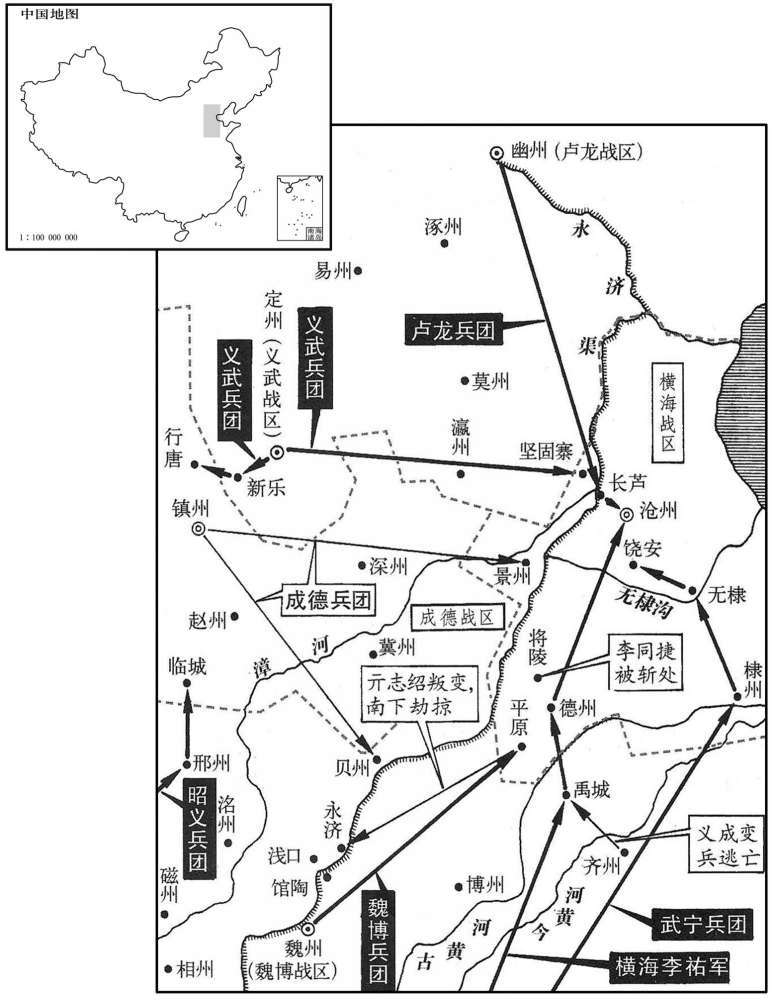
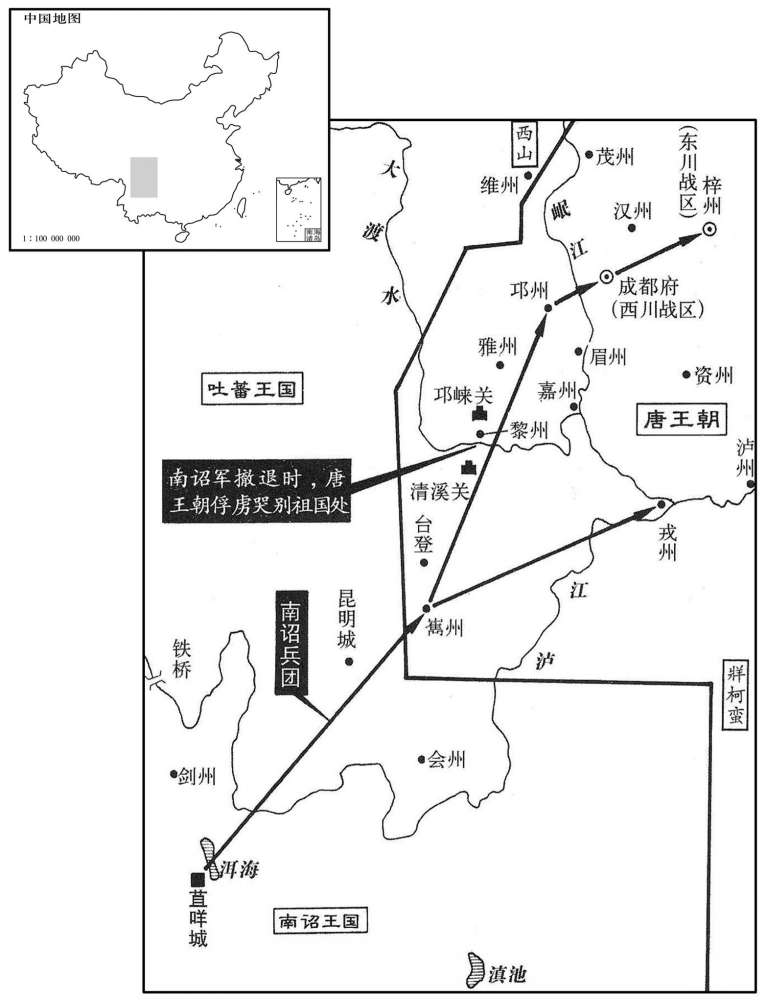

卷次与人物目录 / 卷243
资治通鉴 · 卷第二百四十三【唐纪五十九】
公元823年至公元829年 · 原文、白话与胡三省注
本页按胡注本编排保存全卷内容。白话采用本站所据译本，未可靠对应的内容另列说明；事件标题用于定位，并非原书文字。
本卷共174段原文，169段有译文对应，5段缺译或待核对。
卷第二百四十三【唐纪五十九】起昭阳单阏（癸卯），尽着雍涒滩（戊申），凡六年。
卷首原文与注释
穆宗睿圣文惠孝皇帝下
公元823年 · 唐穆宗睿圣文惠孝皇帝长庆三年
长庆三年〔（癸卯、八二三）〕
上传原文的注释括号有异常，字符原样保留；无法可靠划分的段落默认全文显示。
本年事件索引（现代整理）
春，正月，癸未，赐两军中尉以下钱。二月，辛卯，赐统军军使等绵彩、银器各有差。〔绵，当作「锦」。〔【章：十二行本正作「锦」。】〕〕
春季，正月，癸未（二十七日），唐穆宗赏赐左、右神策军护军中尉以下军将钱。二月，辛卯（初六），赏赐左、右羽林军，左、右龙武军，左、右神武军统军、军使等军将丝绵、银器，根据他们的职务高低分等级颁给。
户部待郎年僧孺，素为上所厚。初，韩弘之子右骁卫将军公武为其父谋，以财结中外。〔为其，于伪翻。〕及公武卒，弘继薨，牦孙绍宗嗣，主藏奴与吏讼于御史府。〔藏，徂浪翻。〕上怜之，尽取弘财簿自阅视，凡中外主权，〔主权，谓中外官之有事权者。〕多纳弘货，独朱句细字曰：「某年月日，送户部年待郎钱千万，不纳。」〔句，古侯翻〕上大喜，以示左右曰：「果然，吾不缪知人！」〔缪，靡幼翻。〕三月，壬，以僧孺为中书侍郎、同平章事。
户部侍郎牛僧孺向来被唐穆宗所器重。当初，宣武节度使韩弘的儿子，右骁卫将军韩公武为了巩固父亲的地位，向朝廷内外的许多当权的官员行贿。后来，韩公武去世。接着，韩弘也去世了，韩弘的小孙子韩绍宗继承家业。这时，韩绍宗家里主管储藏的家奴和宣武的官吏和御史台起诉韩公武行贿的问题。穆宗怜悯韩绍宗，于是，把韩弘家里的财产登记本全部调来，亲自审阅，发现朝廷内外凡当权的官员，大多接受过韩弘的贿赂。登记本上只有一处用红笔小字记裁着：“某年某月某日，送户部牛侍郎钱一千万，拒而不收。”穆宗看后大喜，拿来给左右侍从看，并说：“果然不出我的所料，我没有看错人！”三月，壬戌（初七），任命牛僧孺为中书侍郎、同平章事。
时僧孺与李德裕皆有入相之望；德裕出为浙西观察使，八年不迁，〔至文宗大和三年，用裴度荐，始征李德裕于浙西，又为李宗闵所排，出帅滑。〕以为李逢吉排己，引僧孺为相。由是牛、李之怨愈深。〔考异曰：旧德裕传曰：「初，李逢吉自襄阳入朝，乃密赂纤人，构成于方狱。八月，元稹、裴度俱罢。逢吉代裴度为相，既得权位，锐意报怨。时德裕与僧孺俱有相望，逢吉欲引僧孺，惧绅与德裕禁中沮之，九月，出德裕浙西，寻引僧孺同平章事，繇是交怨愈。」盖德裕以此疑怨逢吉，未必皆出逢吉之意也！〕
这时，牛僧孺和李德裕都有升迁宰相的希望，但李德裕被任命为浙西道观察使，以后八年没有升迁。因此，他认为是宰相李逢吉为了排斥自己，而引荐牛僧孺为宰相。从此以后，牛僧孺和李德裕二人之间的怨恨越来越深。
夏，四月，甲午，安南奏陆州獠攻掠州县。〔武德元年，以宁越郡之安海、玉山置玉山州；贞观元年，州废，属钦州；高宗上元二年，复置陆州，东至廉州界三百里。〕
夏季，四月，甲午（初十），安南都护府奏报：陆州的獠人攻打掠夺本道州县。
丙申，赐宣徽院供奉官钱，紫衣者百二十缗，下至承旨各有差。〔唐中世以后，置宣徽院，以宦者主之。其大朝贺及圣节上寿，则宣徽使宣答。徐度却扫编曰：「宣徽使，本唐宦者之官，故其所掌皆琐细之事。本朝更用士人，品秩亚二府，有南、北院，南院比北院资望尤优，然其职犹多因唐之旧。赐群臣新火，及诸司使至崇班、内侍、供奉、诸司工匠、兵卒名籍，及三班以下迁补、假故、鞫劾，春秋及圣节大宴，节度迎授恩命，上元张灯，四时祠祭，契丹朝贡，内庭学士赴上，督其供帐，内外进奉名物，教坊伶人岁给衣带，郊御殿、朝谒圣容，赐酺，国忌，诸司使下别籍分产，诸司工匠休假之类。」今观穆宗所赐，则宣徽院官员数多矣。〕
丙申（十二日），唐穆宗赏赐宣徽院供奉官钱，凡身着紫色官服的赐一百二十缗，下至承旨官，各根据他们的官品高低分等级颁给。
初，翼城人郑注，眇小，目下视，而巧谲倾谄，善揣人意，〔翼城县，属绛州，本汉绛县地，隋改翼城县，因县古翼城为名。揣，初委翻。〕以医游四方，羇贫甚。尝以药术干徐州牙将，牙将悦之，荐于节度使李愬。愬饵其药颇验，遂有宠，署为牙推，〔牙推，在节度推官之下。〕浸预军政，妄作威福，军府患之。监军王守澄以众情白愬，请去之，〔去，羌吕翻；下同。〕愬曰：「注虽如是，然奇才也，将军试与之语，〔时中官多加诸卫将军，谓之内将军。〕苟无可取，去之未晚。」乃使注往谒守澄，守澄初有难色，不得已见之，坐语未久，守澄大喜，延之中堂，促膝笑语，恨相见之晚。明日，谓愬曰：「郑生诚如公言。」自是又有宠于守澄，权势益张，〔张，知亮翻。〕愬署为巡官，列于宾席。注既用事，恐牙将荐己者泄其本末，密以他罪谮之于愬，愬杀之。及守澄入知枢密，挈注以西，为立居宅，赡给之；〔为，于伪翻。〕遂荐于上，上亦厚遇之。
当初，翼城人郑注虽然身材瘦小，眼睛近视，但却巧言谄媚，善解人意，他以行医游行四方，羁旅他乡，十分贫穷。一次，他以精湛的医术得到一个徐州牙将的赏识，于是，这个牙将把他推荐给节度使李。李服用他的药后，很有效果，因而非常宠爱，任命他为牙推。郑注恃宠，逐渐干预军政，胡作非为，节度使府的官员都感到忧虑。监军王守澄把众人对郑注的反映转告李，请求把他驱除出去。李说：“郑注虽然如此，但他是个奇才，您若不信，请和他试见一面，如果一无是处，再驱除也不晚。”于是，李让郑注去拜见王守澄。王守澄开始还面有难色，后来不得已接见郑注。交谈不久，王守澄大喜，把郑注引到正堂，两人促膝交谈，笑声不断，恨相见太晚。第二天，王守澄对李说：“郑注的确像您说的那样，是个奇才。”从此以后，郑注到得到王守澄的宠爱，权势更加扩张。李又任命他为巡官，成为李的重要幕僚。郑注掌握一定权力后，恐怕原来推荐自己的牙将暴露自己的身世，秘密地以其他罪名告于李，李把牙将杀死。等到王守澄被穆宗召入朝廷，任命为知枢密时，王守澄带郑注到京城，给他修建住宅，加以供养。接着，又向穆宗推荐，穆宗也很器重郑注。
自上有疾，〔去年冬十一月上有疾，事见上卷。〕守澄专制国事，势倾中外；注日夜出入其家，与之谋议，语必通夕，关通赂遗，〔遗，唯季翻。〕人莫能窥其迹。始则有微贱巧宦之士，或因以求进，数年之后，达官车马满其门矣。〔为郑注与李训诛王守澄及甘露之祸张本。〕工部尚书郑权，家多姬妾，禄薄不能赡，因注通于守澄以求节镇；已酉，以权为岭南节度使。
自从穆宗得病以后，王守澄专制朝政，势倾中外。郑注频繁地出入王守澄的家里，和他商议谋划，经常通宵达旦。二人串通收受贿赂，外人都无法窥测他们的踪迹。开始时，还只是一些身世卑贱但又善于钻营趋奉的官吏，通过贿赂郑注而求迁升；几年以后，达官贵戚也都争着和他交往，以致门前车水马龙。工部尚书郑权在家中畜养了很多妻妾，但由于俸禄少而无力供养，于是，通过郑注向王守澄推荐，求为节度使。已酉（二十五日），唐穆宗任命郑权为岭南节度使。
五月，壬申，以尚书左丞柳公绰为山南东道节度使。公绰过邓县，〔唐襄州之邓城县，汉南阳之邓县也，治古樊城。隋改为赡养县，天宝元年改为临汉县；贞元二十一年移县古邓城，乃改为邓城县。九域志：在州北二十里。〕有二吏，一犯赃，一舞文，众谓公绰必杀犯赃者。公绰判曰：「赃吏犯法，法在；奸吏乱法，法亡。」竟诛舞文者。〔考异曰：柳氏叙训曰：「公为襄阳节度使，有名马，人争画为图。圉人洁其蹄尾，被蹴，致毙命，斩于鞠场。宾吏请曰：『圉人备之不至，良马可惜！』公曰：『有良马之貌，含驽马之性，必杀之。』有齐缞者，哭且献状曰：『迁三世十二丧，于武昌为津吏所遏，不得出。』公览状，召军候擒之，破其十二柩，皆实以稻米。时岁俭，邻境尤甚，人以为神明之政，」按韩愈与公绰书曰：「杀所乘马以祭踶死之士，」乃在鄂岳时事，叙训、旧传皆误也。察齐衰者，乃是闭粜，非美事。今不取。〕
五月，壬申（十八日），唐穆宗任命尚书左丞柳公绰为山南东道节度使。柳公绰途经邓县，发现有两个官吏犯法：一个贪污，一个舞文弄墨。众人都认为柳公绰肯定要杀贪污者。不料柳公绰宣判说：“贪污的官吏虽然犯法，但法律仍在；而舞文弄墨的奸吏紊乱法律，则法律已亡。”最后，竟杀舞文弄墨者。
丙子，以晋、慈二州为保义军，以观察使李寰为节度使。
丙子（二十二日），唐穆宗命以晋、慈二州为保义军，任命观察使李寰为节度使。
六月，己丑，以吏部侍郎韩愈为京兆尹；六军不敢犯法，私相谓曰：「是尚欲烧佛骨，〔事见二百四十卷宪宗元和十四年。〕何可犯也！」
六月，已丑（初六），唐穆宗任命吏部侍郎韩愈为京兆尹，禁军将士都不敢犯法，私下里相互说：“他连佛骨都敢烧，我们怎么敢犯法！”
秋，七月，癸亥，岭南奏黄洞蛮寇邕州，破左江镇。〔邕州宣化县有左江、右江二镇，左江出七源州界，至合江镇，与右江水合为一水，流入横州，号郁水。右江源出峨利州界，与云南大盘水通。左江道属太平、永平寨，右江道属横山寨，各管羁縻州。〕丙寅，邕州奏黄洞蛮破钦州千金镇，刺史杨屿奔石南砦。〔千金镇，当在钦州西南。屿，徐与翻。砦，与寨同，音豺夬翻。〕
秋季，七月，癸亥（十一日），岭南奏报：黄洞蛮侵犯邕州，攻破左江镇。丙寅（十四日），邕州奏报：黄洞蛮攻破钦州千金镇，刺史杨屿逃往石南砦。
南诏劝利卒，国人请立其弟丰佑。〔考异曰：实录：「九月辛酉，南诏王立佺进其国信。」岁末又云：「南诏请立蒙劝利之弟丰佑。」云立佺者，盖误也。今从新传。〕丰佑勇敢，善用其众，始慕中国，不与父连名。〔南诏父子连名，其先细奴逻，生逻盛炎，逻盛炎生炎合，炎合死而立其弟盛逻皮，盛逻皮生皮逻合，皮逻合凤，合逻凤生凤迦异，凤迦异生异牟寻，异牟寻生寻阁劝，寻阁劝生劝龙晟、劝利，皆连名也。为南诏强盛寇边张本。
本段缺少可靠对应白话，原文完整保留；未使用生成译文。
八月，癸巳，邕管奏破黄洞蛮。
八月，癸巳（十一日），邕州奏称攻破黄洞蛮。
丙申，上自复道幸兴庆宫，至通化门楼，〔雍录：开元二十年，筑夹城，通芙蓉园，自大明宫夹东罗城复道，由通化、安兴门，次经春明门、延喜门，又可以达曲江芙蓉园，而外人不知也。按复道自大明宫至通化门便可入兴庆宫，若经春明、延兴、延喜门，则至芙蓉园矣。〕投绢二百匹施山僧。〔施，式豉翻。〕上之滥赐皆此类，不可悉纪。
丙申（十四日），唐穆宗从复道到兴庆宫，途经通化门楼时，向山里的僧人施舍绢二百匹。穆宗滥施赏赐，毫无节制，像这一类事情，无法一一记载。
癸卯，以左仆射裴度为司空、山南西道节度使，不兼平章事。李逢吉恶度，〔恶，乌路翻。〕右补阙张又新等附逢吉，竞流谤毁伤度，竟出之。又新，荐之子也。〔张荐事德宗，屡使吐蕃、回鹘。〕
癸卯（二十一日），唐穆宗任命左射裴度为司空、山南西道节度使，不再兼同平章事。宰相李逢吉憎恨裴度。右补阙张又新等人附合李逢吉，竞相用流言诽谤中伤裴度，结果，竟然使裴度离开朝廷，放任为外地的节度使。张又新是唐德宗时朝臣张荐的儿子。
九月，丙辰，加昭义节度使刘悟同平章事。
九月，丙辰（初五），唐穆宗加封昭义节度使刘悟同平章事的荣誉职务。
李逢吉为相，内结知枢密王守澄，势倾朝野。〔考异曰：李让夷敬宗实录曰：「逢吉用族子仲言之谋，因郑注与守澄潜结上于东宫，且言逢吉实立殿下，上深德之。」又曰：「张又新、李续之，皆逢吉藩僚，时又新为右补阙，续之为度支员外郎。」刘昫承之为逢吉传，亦言：「逢吉令仲言赂注，求结于守澄。仲言辩谲多端，守澄见之甚悦，自是逢吉有助，事无违者。」其李训传则云：「训自流所还，丁母忧，居洛中，时逢吉为留守，思复为相，乃使训因郑注结王守澄。」然则逢吉结守澄，乃在文宗时，非穆宗时也。二传自相违。逢吉结守澄，要为不诬，然未必因郑注。李让夷乃李德裕之党，恶逢吉，欲重其罪，使与李训、郑注皆有连结之迹，故云用训谋，因注以交守澄耳。又张又新、李续之为逢吉藩僚，乃在逢吉再镇襄阳后，于此时未也。今不取。〕惟翰林学士李绅每承顾问，常排抑之，拟状至内庭，绅多所臧否；〔拟状，谓进状所拟除目也。翰林学士院在内庭，盖李逢吉所进拟者，穆宗访其可否于李绅，故得言之。否，音鄙。〕逢吉患之，而上待遇成厚，不能远也。〔远，于愿翻。〕会御史中丞缺，逢吉荐绅清直，宜居风宪之地；上以中丞亦次对官，〔程大昌曰：德宗贞元七年，诏每御延英，令诸司长官二人奏本司事；俄又令常参官必日引见二人，访以政事，谓之巡对。则是待制之外，又别有巡对也。盖正谓待制者，诸司长官也。名为巡对者，未为长官而在常参之数，亦得更迭引对者也。其曰次对官者，即巡对官，许亚次待制而俟对者也。则次对不得正为待制矣。今人作文，凡言待制，皆以次对名之，则恐未审也。然称谓既熟，虽唐人亦自不辩。开成中，敕今后遇入合日，次对官未要随班出，并于东阶松木下立，待宰臣奏事退，令齐至香案前各奏本司公事。左、右史待次对官奏事讫同出案。此所言尝以诸司之长官待制者，名为次对官矣。若究其制，实误以待制为次对官也。余考唐中世以后，宰相对延英，既退，则待制官、巡对官皆得引对，总可谓之次对官。所谓次对官者，谓次宰相之后而得对也，非次待制官而入对也。唐人本不误，程泰之自误耳。据宋白所纪，贞元七年十一月敕，则次对官者以常参官依次对为称。详已见前注。〕不疑而可之。会绅与京兆尹、御〔【章：十二行本「御」上有「兼」字；乙十一行本同。】〕史大夫韩愈争台参及他职事，文移往来，辞语不逊；〔故事，京尹新除，皆诣台参。逢吉欲激二人使争，以愈兼御史大夫免台参，而绅、愈果争。不逊，谓不相逊也。〕逢吉奏二人不协，冬，十月，丙戌，以愈为兵部侍郎，绅为江西观察使。
李逢吉但任宰相，在宫中交结知枢密王守澄，因而势倾朝野。只有翰林学士李绅在每次参预穆宗的谘询时，经常对他加以遏制。李逢吉推荐官员的拟状上奏后，穆宗拿到翰林学士院听了意见，李绅多有批评。李逢吉十分忧虑，但因穆宗正信任李绅，李逢吉无法进谗言使穆宗疏远他。这时，正好御史中丞缺职，李逢吉推荐李绅清廉正直，适合担任监察工作的职务。穆宗考虑到御史中丞也是次对官，因而，未加怀疑就同意了。适逢李绅与京兆尹、御史大夫韩愈因台参及其他任职事争议不休，二人奏章往来，辞语多有不逊。于是，李逢吉上奏二人关系不合，冬季，十月，丙戌（初五），穆宗罢免二人的监察职务，任命韩愈为兵部侍郎，李绅为江西道观察使。
己丑，以中书侍郎、同平章事杜元颖同平章事、充西川节度使。〔为杜元颖以刻削致寇张本。〕
已丑（初八），唐穆宗任命中书侍郎、同平章事杜元颖兼同平章的荣誉职务，充任剑南西川节度使。
辛卯，安南奏黄洞蛮为寇。
辛卯（初十），安南奏报：黄洞蛮侵扰。
韩愈、李绅入谢，上各令自叙其事，乃深寤。壬辰，复以愈为吏部侍郎，绅为户部侍郎。〔考异曰：穆宗实录曰：「绅性险果，交结权幸，自以望轻，颇忌朝廷有名之士；及居近署，封植己类以树党援，进修之士惧为伤毒，疾之。常指钧衡欲逞其私志，时宰病之，因以人情上论，谏官历献疏，方有江西之命。行有日矣，因延英对辞，又泣请留侍，故有是拜，人情忧骇。」此盖修穆宗实录者恶绅，故毁之如是。今从敬宗实录。〕
韩愈、李绅上殿向穆宗感谢新任职务，穆宗令二人各自陈述争论的事情经过，方才明白其中的原因。壬辰（十一日），重新任命朝愈为吏部侍郎，李绅为户部侍郎。
译本中未与胡注本可靠对应的内容
以下另列供核对版本差异，不并入胡注本正文。
译本所附古文
[10]南诏劝利卒，国人请立其弟丰。丰勇敢，善用其众，始慕中国，不与父连名。
译本白话
南诏国王劝利去世，南诏人向唐奏请立劝利的弟弟丰为王。丰勇敢而善于用人，羡慕唐朝的礼仪和文化，从他开始不再与父辈连名。
公元824年 · 唐穆宗睿圣文惠孝皇帝长庆四年
四年〔（甲辰、八二四）〕
上传原文的注释括号有异常，字符原样保留；无法可靠划分的段落默认全文显示。
本年事件索引（现代整理）
- 穆宗首次亲临含元殿朝会
- 处士张皋上疏反对穆宗服用金石之药
- 黄洞蛮寇钦州并杀害官吏将士
- 穆宗病重命太子监国，郭太后拒绝临朝，穆宗崩
- 穆宗在位时曾厚赏神策军，朝廷后调整赏赐并拨内库绫充边军春衣
- 李逢吉指使党羽搜集李绅言行并构陷
- 敬宗即位后李逢吉党羽合谋贬逐李绅
- 韦处厚上疏为李绅申辩，敬宗阅穆宗旧奏后不再听信谗言
- 敬宗尊郭太后为太皇太后
- 敬宗尊生母王妃为皇太后
- 敬宗多次游宴击球并赏赐宦官、乐人
- 敬宗大赦天下并禁止诸道额外进奉
- 敬宗开始在延英殿召见宰相
- 王庭凑杀害牛元翼留在成德的家属
- 敬宗视朝迟晚，刘栖楚叩头进谏
- 敬宗赐内教坊钱以备出游
- 敬宗免除王播盐铁转运使职务
- 敬宗任用姜洽等人，李逢吉党羽结成“八关十六子”
- 苏玄明、张韶密谋借敬宗外出时发动宫廷叛乱
- 敬宗在清思殿击球，闻乱后仓皇逃往左神策军
- 张韶占据清思殿御榻，后与苏玄明一党被杀
- 敬宗在左神策军避乱，次日返宫并厚赏平乱将士
- 敬宗任李程、窦易直为同平章事并采纳李程停止营殿建议
- 敬宗任康艺全为鄜坊节度使
- 敬宗闻牛元翼家属被杀，韦处厚上疏请重新起用裴度
- 马存亮因平定张韶之乱有功而自请外任
- 李祐拒绝进献马匹，温造弹劾后敬宗予以宽免
- 安南奏报黄洞蛮入寇
- 尉迟锐请修补牛心山断处，朝廷征工役致东川凋弊
- 波斯商人李苏沙进献沉香亭材，李汉上疏批评
- 韦处厚以先帝服药致疾为戒，谏敬宗宴游
- 黄洞蛮与环王合兵攻陷陆州并杀刺史葛维
- 穆宗葬于光陵，庙号穆宗
- 王播贿赂王守澄求复领盐铁，谏官请廷议其事
- 敬宗加乌重胤同平章事
- 王智兴借敬宗生日请求设戒坛度僧尼敛财，李德裕谏止
- 回鹘崇德可汗卒，弟曷萨特勒继位
春，正月，辛亥朔，上始御含元殿朝会。〔上即位四年矣，是岁元正，方御东内正牙大朝会。〕
春季，正月，辛亥朔（初一），唐穆宗自即位以来，首次亲临在含元殿举行的大朝会。
初，柳泌等既诛，〔见二百四十一卷元和十五年。〕方士稍复因左右以进，〔复，扶又翻。〕上饵其金石之药。有处士张皋者上疏，以为：「神虑澹则血气和，嗜欲胜则疾疢作。〔澹，徒览翻。疢，丑刃翻。〕药以攻疾，无疾不可饵也。昔孙思邈有言，〔孙思邈，唐之名医。『药势有所偏助，令人藏气不平，〔藏，徂浪翻。藏气，五藏之气也。〕借使有疾用药，犹须重慎。』庶人尚尔，况于天子！先帝信方士妄言，饵药致疾，此陛下所详知也，岂得复循其覆辙乎！〔复，扶又翻；下同。〕今朝野之人纷纭窃议，但畏忤旨，莫敢进言。臣生长蓬艾，〔长，知丈翻。〕麋鹿与游，无所邀求，但粗知忠义，欲裨万一耳！」上甚善其言，使求之，不获。
当初，柳泌等人被杀后，方士又逐渐通过穆宗的左右侍从进入宫中，穆宗服用方士所炼制的金石药物。有一个隐居未仕名叫张皋的人上书朝廷，认为：“凡是精神澹泊的人就血气相和，身体康健；而欲望强烈的人则容易疾病发作。药是用来治病的东西，没有病就不要轻易吃。过去，孙思邈曾说：‘药对人身体各个器官的作用是有所偏重的，它会导致人的五脏元气不平，所以，即使有病吃药，也要非常慎重。’对于一般百姓尚且如此，何况天子呢！先帝听信方士的胡言乱语，服用金丹导致疾病发作，陛下是十分清楚的，岂可再蹈覆辙！现在，朝廷内外纷纷私下议论这件事，但都恐怕违背陛下的旨意，不敢上书直言。我是生长在草莽中的隐居人士，整天和麋鹿相处一起，无所追求，但也大略懂得一些忠义的道理，所以上书朝廷，请以防患于万一。”穆宗十分赞赏张皋的这一番话，派人去访求张皋，结果，没有找到。
丁卯，岭南奏黄洞蛮寇钦州，杀将吏。〔旧制，钦州至京师五千二百五十一里。〕
丁卯（十七日），岭南奏报：黄洞蛮侵扰钦州，杀将士和官吏。
庚午，上疾复作；壬申，大渐，命太子监国。宦官欲请郭太后临朝称制，太后曰：「昔武后称制，几危社稷。〔事见武后纪。几，居依翻。〕我家世守忠义，非武氏之比也。太子虽少，〔少，诗照翻。〕但得贤宰相辅之，卿辈勿预朝政，何患国家不安！自古岂有女子为天下主而能致唐、虞之理乎！」取制书手裂之。太后兄太常卿钊闻有是议，密上笺曰：「苟果徇其请，臣请先帅诸子纳官爵归田里。」〔帅，读曰率。〕太后泣曰：「祖考之庆，锺于吾兄。」是夕，上崩于寝殿。〔年三十。〕癸酉，以李逢吉摄冢宰。丙子，敬宗即位于太极东序。
庚午（二十日），唐穆宗疾病再次发作。壬申（二十二日），病重，命皇太子代理朝政。宦官想请郭太后临朝代行皇权，太后说：“过去，武皇后称帝，几乎危害江山社稷，我家世代恪守忠义，决非武氏所能相比。太子虽然年轻，但如果能有德才兼备的宰相辅佐，你们这些人也都不干预朝政，就不用忧虑国家不安定！自古以来，岂有女人主宰天下，而能达到唐尧、虞舜那样的天下大治吗？”说完，把宦官拟定的制书拿过来撕了。郭太后的兄弟、太常卿郭钊听到宦官的建议，秘密上书给郭太后说：“如果您听从宦官的请求，那么，我就和儿子们把自己的官衔和爵位交还朝廷，然后回家种田。”郭太后哭着说：“祖先庆幸有我的兄弟这样的好后代。”当晚，穆宗在寝殿驾崩。癸酉（二十三日），朝廷任命李逢吉兼任冢宰，主持穆宗的治丧事宜。丙子（二十六日），唐敬宗李湛在太极殿东厢即位。
初，穆宗之立，神策军士人赐钱五十千，〔事见二百四十一卷元和十五年。〕宰相议以太厚难继乃下诏称：「宿卫之勤，诚宜厚赏，属频年旱歉，〔属，之欲翻。〕御府空虚，边兵尚未给衣，沾恤期于均济。神策军士人赐绢十匹、钱十千，畿内诸镇又减五千。仍出内库绫二百万匹付度支，充边军春衣。」时人善之。〔李逢吉为相，时人之所恶也。一事之善，则时人善之，非是非之公欤！度，徒洛翻。
两版字句有差异，建议核对原文。
当初，唐穆宗即位时，赏赐神策军军士每人钱五十缗。宰相商议，认为赏赐过于优厚，难以继续实行。于是，敬宗下诏说：“按照禁军将士宿卫的功劳，实在应当给予优厚的赏赐。但近年以来屡有旱灾，庄稼歉收，国库空虚，戍边兵士至今尚未供给春衣。朝廷对将士的恩惠应当尽量平均，所以，凡神策军军士每人赐绢十匹，钱十缗；京畿神策诸镇军士每人钱减五缗。同时，从内库拨调绫二百万匹交给度支，充作边防戍兵的春衣。”当时人都称赞这次赏赐比较公允。
初，穆宗既留李绅，〔事见上年。〕李逢吉愈忌之。绅族子虞颇以文学知名，自言不乐仕进，〔乐，音洛。〕隐居华阳川。〔华阳川，在虢州华阳山南。华，户化翻。〕及从父耆为左拾遗，〔从，才用翻；下从子同。〕虞与耆书求荐，误达于绅；绅以书诮之，且以语于众人。〔诮，才笑翻。语，年倨翻。〕虞深怨之，乃诣逢吉，悉以绅平日密论逢吉之语告之。逢吉益怒，使虞与补阙张又新及从子前河阳掌书记仲言等伺求绅短，扬之于士夫间；〔伺，相吏翻。〕且言「绅潜察士大夫有群居议论者，辄指为朋党，白之于上。」由是士大夫多忌之。
当初，唐穆宗把李绅留在朝廷任职后，宰相李逢吉更加忌恨他。李绅的族子李虞由于文章博学而知名一时，他自称不愿做官，因而隐居在华阳川。等到他的叔父李耆任左拾遗后，李虞写信给李耆，请求向朝廷推荐，不料这封信误送到李绅手中，李绅便写信讥讽他，并把这件事在大庭广众中张扬。李虞得知后非常气愤，于是，求见李逢吉，把李绅平时暗地里议论李逢吉的话全都告诉了他。李逢吉更加憎恨李绅，于是，让李虞和补阙张又新，以及侄子、前河阳掌书记李仲言等人探察李绅的过失，然后，在士大夫中间张扬，并说：“李绅暗地里窥察士大夫，凡有人在一起议论，便指斥为朋党，向皇上告状。”由此士大夫也大多忌恨李绅。
及敬宗即位，逢吉与其党快绅失势，又恐上复用之，〔复，扶又翻。〕日夜谋议，思所以害绅者。楚州刺史苏遇〔楚州，汉射阳县地，晋立山阳郡，隋为楚州，至京师二千五百一里。〕谓逢吉之党曰：「主上初听政，必开延英，有次对官，惟此可防。」〔恐绅因次对言事，而上复用之。〕其党以为然，亟白逢吉曰：「事迫矣，若俟听政，悔不可追！」逢吉乃令王守澄言于上曰：「陛下所以为储贰，臣备知之，皆逢吉之力也。如杜元颖、李绅辈，皆欲立深王。」〔深王察，后改名悰，宪宗之子，穆宗之弟也。〕度支员外郎李续之等继上章言之。上时年十六，疑未信。会逢吉亦有奏，言「绅不利于上，请加贬谪。」上犹再三覆问，然后从之。二月，癸未，贬绅为端州司马。〔端州，隋置，取界内端溪为名；炀帝初置信安郡，武德又为端州，天宝改为高安郡，干元复为州。旧志：至京师四千九百三十五里。〕逢吉仍帅百官表贺，〔帅，读曰率。〕既退，百官复诣中书贺，〔复，扶又翻；下同。〕逢吉方与张又新语，门者弗内；良久，又新挥汗而出，旅揖百官曰：「端溪之事，又新不敢多让。」〔端州谓之端溪。〕众骇愕辟易，惮之。〔辟，音辟。易，音亦。〕右拾遗、内供奉吴思独不贺，逢吉怒，以思为吐蕃告哀使。丙戌，贬翰林学士庞严为信州刺史，蒋防为汀州刺史。〔唐上元元年，割饶州之弋阳、衢州之玉山，建、抚二州各三乡，置信州，至京师东南三千八百里。开元二十六年，开福、抚二州山洞，置汀州，至京师六千一百七十三里。〕严，寿州人，与防皆绅所引也。给事中于，素与严善，封还敕书；人为之惧，〔为，于伪翻。〕曰：「于给事为庞、蒋直冤，犯宰相怒，诚所难也！」及言贬之太轻。逢吉由是奖之。
敬宗即位后，李逢吉和他的党羽对李绅失势拍手称快，但又恐怕敬宗重新信用他，因而日夜策划，商量能够伤害李绅的办法。楚州刺史苏遇对李逢吉的党羽说：“皇上初次上朝听政，肯定要开延英殿访询百官。李绅是次对官，在这时应防备李绅重新被皇上重用。”李逢吉的党羽认为言之有理，急忙转告李逢吉说：“事情紧迫，如果等到皇上驾临延英殿听政，就悔不可及了！”于是，李逢吉让知枢密王守澄对敬宗说：“陛下所以能被立为皇太子，我全都知道，主要是李逢吉的功劳。像杜元颖、李绅这些人，都是要立深王李察的。”度支员外郎李续之等人接着上奏，也同样说。敬宗这时十六岁，疑而未信。这时，李逢吉也上奏说：“李绅不忠于陛下，请予以贬谪。”敬宗仍再三询问是否属实，然后听从了李逢吉的意见。二月，癸未（初三），贬李绅为端州司马。于是，李逢吉率领百官上表称贺。退朝后，百官又到中书省称贺。这时，李逢吉正和张又新在中书省交谈，守门人不让百官进去，百官等待很久，只见张又新挥汗而出，向百官作揖说：“李绅贬官端州一事，我不能再退让了。”百官都惊愕退下，惧怕张又新。百官称贺时，只有右拾遗内供奉吴思不作祝贺的表示，李逢吉发怒，任命他为吐蕃告哀使。丙戌（初六），贬翰林学士庞严为信州刺史，蒋防为汀州刺史。庞严是寿州人，他和蒋防都是由李绅推荐到翰林院任职的。给事中于敖向来和庞严关系密切，他把贬谪二人的敕书封还朝廷，百官都以为他要为二人辩解，因而替他担忧说：“于给事敢于为庞、蒋二人辩冤，触犯宰相，真是不容易啊！”后来，于敖上奏辩驳时，反而说对二人贬得太轻。李逢吉由此而夸奖他。
张又新等犹忌绅，日上书言贬绅太轻，上许为杀之；〔为，于伪翻。〕朝臣莫敢言，独翰林侍读学士韦处厚上疏，〔太宗选耆儒侍读，以质史籍疑义。开元中，集贤院置侍读直学士。时翰林有侍读学士，有侍书学士。〕指述「绅为逢吉之党所谗，人情叹骇。绅蒙先朝奖用，借使有罪，犹宜容假，以成三年无改之孝，〔论语：孔子曰：三年无改于父之道，可谓孝矣。〕况无罪乎！」是上稍开寤，〔考异曰：处厚传曰：「敬宗即位，李逢吉用事，素恶李绅，乃构成其罪，祸将不测。处厚乃上疏云云。帝悟其事，绅得减死，贬端州司马。」今从实录。处厚上疏，在绅贬端州后。〕会阅禁中文书，有穆宗所封文书一箧，发之，得裴度、杜元颖、李绅疏请立上为太子，上乃嗟叹，悉焚人所上谮绅书，〔所上，时掌翻。〕虽未即召还，后有言者，不复听矣。
张又新等人仍然忌恨李绅，每天上书朝廷，认为对李绅贬得太轻，敬宗许可杀李绅。朝臣都不敢再言，只有翰林侍读学士韦处厚上奏，指出“李绅被李逢吉的党羽进谗言诬陷贬谪，人们都感到震惊，无不叹息。李绅是由穆宗提拔任用的大臣，即使他有罪，也应当本着对父亲尽三年孝道的精神，对他予以宽容，何况他根本无罪！”于是，敬宗渐渐觉悟。这时，恰巧敬宗阅览宫中的文书，发现有一小箱穆宗亲手封存的文书，打开后，看到其中一件是裴度、杜元颖、李绅上疏请立自己为皇太子的上奏，这才嗟叹不已，把朝臣离间李绅的上书全都烧掉，不再相信。虽然敬宗尚未立即把李绅从端州召回朝廷，但以后再有人上奏离间，不再听了。
己亥，尊郭太后为太皇太后。
己亥（十九日），唐敬宗尊奉郭太后为太皇太后。
乙巳，尊上母王妃为皇太后。太后，越州人也。
乙巳（二十五日），唐敬宗尊奉自己的母亲王妃为皇太后。皇太后是越州人。
丁未，上幸中和殿击球，自是数游宴、击球、奏乐，〔数，所角翻。〕赏赐宦官、乐人，不可悉纪。
丁未（二十七日），唐敬宗到中和殿去踢球，此后多次游宴、踢球、奏乐，并赏赐宦官和奏乐的伎工，难以全部记载。
三月，壬子，赦天下；诸道常贡之外，毋得进奉。
三月，壬子（初三），唐敬宗大赦天下，命诸道在规定的上贡数额以外，不准再向朝廷进奉。
甲寅，上始对宰相于延英殿。
甲寅（初五），唐敬宗开始在延英殿会见宰相，商议朝政大事。
初，年元翼在襄阳，〔牛元翼出深州，镇襄阳，见上卷二年。〕数赂王庭凑以请其家，〔数，所角翻。〕庭凑不与；闻元翼薨，甲子，尽杀之。
当初，牛元翼镇守襄阳后，多次贿赂成德节度使王庭凑，请求把自己的家眷释放送还，王庭凑拒不释放。后来，听说牛元翼已死，甲子（十五日），把他的家眷全部杀死。
上视朝每晏，戊辰，日绝高尚未坐，百官班于紫宸门，老病者几至僵踣。〔僵，居良翻。踣，蒲北翻。〕谏议大夫李渤白宰相曰：「昨日疏论坐晚，〔论上坐朝之晚也。〕今晨愈甚，请出合待罪于金吾仗。」〔金吾左、右仗，在宣政殿前。〕既坐班退，左拾遗刘栖楚独留，进言曰：「宪宗及先帝皆长君，四方犹多叛乱。陛下富于春秋，嗣位之初，当宵衣求理；而嗜寝乐色，〔宵衣，未明而衣也。理，治也。乐，鱼教翻。〕日晏方起，梓宫在殡，鼓吹日喧，〔吹，尺伪翻。〕令闻未彰，〔闻，音问；下响闻同。〕恶声遐布。臣恐福祚之不长，请碎首玉阶以谢谏职之旷。」遂以额叩龙墀，见血不已，响闻合外。〔考异曰：实录曰：「庄周云：『为善无近名，为恶无近刑。』意者既能为近名之善，即必忍为近刑之恶。栖楚本王承宗小吏，果敢有闻，逢吉擢而用之，盖取其鹰犬之效耳。夫谏诤之道，是岂能知之乎！即如比千剖心，当文王与纣之事也。朱云折槛，恐汉氏之为新室也。时危事迫，不得不然，故忠臣有死谏之义。至如上年少嗜寝，坐朝稍晚，盖宰臣密勿、谏臣封事而可止者也，岂在暴扬面数，激讦于羽仪之前，致使上疑死谏为不难，谓细事皆当碎首，从此遂不览章疏，卒有克明之难，实栖楚兆之。况谏辞皆群党所作，而使栖楚道之哉！卖前直而资后诈，殊可叹骇。」按李让夷此论，岂非恶栖楚而强毁之邪！今所不取。〕李逢吉宣曰：「刘栖楚休叩头，俟进止！」〔程大昌曰：奏札言取进止，犹言此札之或留或却，合禀承可否也。唐中叶遂以处分为进止，而不晓文义者习而不察，概谓有旨为进止。如玉堂宣底所载凡宣旨皆云有进止者，相承之误也。〕栖楚捧首而起，更论宦事，上连挥令出。栖楚曰：「不用臣言，请继以死。」牛僧孺宣曰：「所奏知，门外俟进止！」〔此宰相宣上旨也。言所奏知者，谓所奏之事，上已知之也。〕栖楚乃出，待罪于金吾仗，于是宰相赞成其言。上命中使就仗，并李渤宣慰令归。寻擢栖楚为起居舍人，仍赐绯。栖楚辞疾不拜，归东都。
唐敬宗每次上朝都很晚。戊辰（十九日），太阳已经很高了尚未来到，百官在紫宸门外列班等待，老弱有病者几乎双腿麻木跌倒。谏议大夫李渤对宰相说：“昨天我上疏论皇上上朝太晚，不料今天早晨上朝更晚。皇上不改，请允许我在金吾仗前等候皇上治罪。”敬宗上朝结束，百官退朝后，左拾遗刘栖楚独自留下，对敬宗说：“宪宗皇帝和先帝都是成年后即位，但各地仍多有叛乱。陛下年纪正轻，即位之初，应当早起晚睡，勤于政事，以求治理天下。但您却喜好音乐女色，贪睡晚起。现在，先皇帝的棺木还未下葬，治丧的乐队鼓吹声不绝于耳。而陛下勤政的名声尚未显扬，不孝的恶名却已遐迩闻知。我担心国家的命运难以长久，现在，我请求死在陛下面前，作为对我这个谏官失职罪责的惩罚。”说完，用前额叩撞敬宗前面的龙形台阶，流血不止，叩撞声连宫殿外面都能听见。李逢吉宣布敬宗的旨意说：“刘栖楚不要再叩头了，现在听候皇上的决定！”刘栖楚用手揍头而起，接着，又上奏宦官专权的问题。敬宗很不耐烦，连连挥手令他出去。刘栖楚说：“陛下如果不采纳我的意见，我请求接着死在陛下面前。”牛僧孺又宣布敬宗的旨意说：“你的上奏已经知道了，请到门外听候皇上的决定！”刘栖楚于是出去，到金吾仗前等候。这时，宰相都上奏赞成刘栖楚的意见。于是，敬宗派宦官到金吾仗前安抚刘栖楚和李渤，命二人回家。不久，提拔刘栖楚为起居舍人，并赐予五品的红色官服。刘栖楚借口身体有病而不接受，回到东都去了。
庚午，赐内教坊钱万缗，以备行幸。〔武德后，置内教坊于禁中，武后如意元年，改曰云韶府，以中官为使。开元二年，又置内教坊于蓬莱宫侧。京都有左、右教坊。
本段缺少可靠对应白话，原文完整保留；未使用生成译文。
夏，四月，甲午，淮南节度使王播罢盐铁转运使。〔王播兼盐铁转运，见上卷二年。〕
夏季，四月，甲午（十五日），唐敬宗罢免淮南节度使王播兼任的盐铁转运使的职务。
乙未，以布衣姜洽为补阙，试大理评事陆洿、布衣李虞、刘坚为拾遗。〔六典注云：隋置大理评事。通典云：唐置评事十人；掌出使、推覆，后增为十二人。新志：评事八人，从八品下。陆洿特试官耳。洿，后五翻。〕时李逢吉用事，所亲厚者张又新、李仲言、李续之、李虞、刘栖楚、姜洽及拾遗张权舆、程昔范，又有从而附丽之者，时人恶逢吉者，目之为八关、十六子。〔附，依也。丽，着也。自张又新至程昔范八人，而附丽者又八人，皆任要剧，故目之为八关、十六子。关者，要也。考异曰：按宰相之门，何尝无特所亲爱之士，数蒙引接，询访得失，否臧人物，其间忠邪溷殽，固亦多矣。其疏远不得志者则从而怨疾之，巧立品目以相讥诮，此古今常态，非独逢吉之门有八关、十六子也。旧逢吉传以为「有求于逢吉者，必先经此八人纳赂，无不如意。」亦恐未必然；但逢吉之门，险诐者为多耳。此皆出于李让夷敬宗实录。按栖楚为吏，敢与王承宗争事，此乃正直之士，何得为佞邪之党哉！盖让夷，德裕之党，而栖楚为逢吉所善，故深诋之耳。〕
乙未（十六日），唐敬宗任命平民姜洽为补阙，试大理评事陆、平民李虞、刘坚为拾遗。这时，宰相李逢吉专制朝政，他所亲信重用的人有张又新、李仲言、李续之、李虞、刘栖楚、姜洽以及拾遗张权舆、程昔范，还有一些顺从而依附他们的士人。当时凡僧恨李逢吉的人，都把他们称为八关、十六子。
卜者苏玄明与染坊供人张韶善，〔染坊供人，供役于染坊者也。陆德明曰：染，如艳翻；刘而险翻。〕玄明谓韶曰：「我为子卜，〔为，于伪翻。〕当升殿坐，与我共食。今主上昼夜球猎，多不在宫中，大事可图也。」韶以为然，乃与玄明谋结染工无赖者百余人，丙申，匿兵于紫草车，载以入银台门，〔本草曰：紫草，出砀山山谷及楚地，今处处有之，人家园圃或种莳。其根，所以染紫也。尔雅谓之藐，广雅谓之茈竍。苗似兰香，节青，二月有花，紫白色，秋实，白，三月采根阴干。以下文清思殿征之，所入者左银台门也，在大明宫东面，又北则玄化门。〕伺夜作乱。〔未达所诣，有疑其重载而诘之者，〔载，才代翻。〕韶急，即杀诘者，与其徒易服挥兵，大呼趣禁庭。
占卜术士苏玄明和朝廷染坊的供役人张韶关系亲近，苏玄明对张韶说：“我为你占卜了吉凶，你将来应当进宫升殿而坐，和我同食，同享富贵。现在皇上昼夜踢球游猎，大多数时间不在宫中，可以乘机而图大事。”张韶认为言之有理，于是，和苏玄明在暗地里交结染坊工匠无赖者一百多人。丙申（十七日），他们把兵器藏在柴草中，装在车上，打算运进银台门，趁夜黑时作乱。还未到达目的地，有人怀疑他们的车超重，加以盘问。张韶着急，立即杀死盘问者。然后，和他的同党换去外衣，手握兵器，大喊直冲宫中。
上时在清思殿击球，〔自左银台门西入，经太和殿至清思殿。清思殿之南则宣徽殿，北则珠镜殿。〕诸宦者见之，惊骇，急入闭门，走白上；盗寻斩关而入。先是右神策中尉梁守谦有宠于上，每两军角伎艺，〔先，悉荐翻。伎，渠绮翻。〕上常佑右军。至是，上狼狈欲幸右军，左右曰：「右军远，恐遇盗，不若幸左军近。」〔唐左神策军、左羽林军皆列屯东内苑，直左银台门东北角。〕上从之。左神策中尉河中马存亮闻上至，走出迎，捧上足涕泣，自负上入军中，遣大将康艺全将骑卒入宫讨贼。〔将，即亮翻。〕上忧二太后隔绝，〔二太后，太皇太后郭氏、上母太后王氏也。〕存亮复以五百骑迎二太后至军。〔复，扶又翻。〕
敬宗这时正在清思殿踢球。宦官们发觉有人向宫中冲来，大为吃惊，急忙跑进来关闭宫门，然后跑去向敬宗报告。顷刻间，张韶等人攻破宫门，冲入宫中。原先，敬宗宠爱右神策军护军中尉梁守谦，每次左、右神策军比试武艺，敬宗常常为右军助威。这时，敬宗狼狈不堪，想到右神策军营中避难，左右侍从说：“右军路近，恐怕半路遇上盗贼，不如到左军近。”敬宗同意。左神策军护军中尉河中人马存亮听说敬宗驾临，急忙跑出军营迎接，他两手捧住敬宗的双脚哭泣不已，亲自把敬宗背到军中，然后，命大将康艺全率骑兵入宫讨伐乱党。敬宗担心太皇太后和皇太后隔在宫中有危险，存亮又派五百骑兵把两位太后接到军中。
张韶升清思殿，坐御榻，与苏玄明同食，曰：「果如子言！」玄明惊曰：「事止此邪！」韶惧而走。会康艺全与右军兵马使尚国忠引兵至，合击之，杀韶、玄明及其党，死者狼藉。逮夜始定，余党犹散匿禁苑中；明日，悉擒获之。
张韶登上清思殿，坐在皇帝的御榻上，和苏玄明一同吃饭，说：“果然像你说的那样！”苏玄明大惊，说：“难道你所企求的就是吃吗？”张韶畏惧而逃。正在这时，康艺全和右神策军兵马使尚国忠率兵到达，二人合兵讨击，杀张韶、苏玄明及其同党，尸体狼藉遍地。直到夜里，宫中方才安定。张韶的余党仍有人散藏在禁苑中，第二天，全部擒获。
时宫门皆闭，上宿于左军，中外不知上所在，人情恇骇。〔恇，去王翻。〕丁酉，上还宫，宰相帅百官诣延英门贺，来者不过数十人。〔帅，读曰率。〕盗所历诸门，监门宦者三十五人法当死；己亥，韶并杖之，仍不改职任。〔两中尉及诸宦者右之也。〕壬寅，厚赏两军立功将士。
这时，大明宫的各个大门都已关闭，敬宗住在左神策军中，朝廷内外都不知敬宗去向，人心恐惧。丁酉（十八日），敬宗回宫，宰相率百官到延英门祝贺，前来的朝官不过数十人。按照法律规定，凡张韶和他的同党所经过的宫门，监门宦官有三十五人由于失职而应当叛处死刑。己亥（二十日），敬宗下诏，命用刑杖责罚宦官，但未变动他们的职务。壬寅（二十三日），命重赏左、右神策军立功的将士。
五月，乙卯，以吏部侍郎李程、户部侍郎。判度古窦易直并同平章事。上问相于李逢吉，逢吉列上当时大臣有资望者，程为之首，〔列上，时掌翻。〕故用之。上好治宫室，〔好，呼到翻。治，直之翻。〕欲营别殿，制度甚广，李程谏，请以所具木石回奉山陵，上即从之。
五月，乙卯（初七），唐敬宗任命吏部侍郎李程，户部侍郎、判度支窦易直并为同平章事。敬宗曾问李逢吉谁可以做宰相，李逢吉把朝中大臣按资功和声望高低，列表奏上。结果，李程排在首位，所以敬宗任命他为宰相。敬宗喜好修筑宫殿，打算再修一座别殿，设计的规模很大。李程劝阻敬宗，请求将准备好的木材和石料用来修筑穆宗的陵墓。敬宗随即采纳了他的意见。
六月，己卯朔，以左神策大将军康艺全为鄜坊节度使。〔赏讨张韶、苏玄明之功也。〕
六月，己卯朔（初一），唐敬宗任命左神策军大将军康艺全为坊节度使。
上闻王庭凑屠牛元翼家，叹宰辅非才，使凶贼纵暴。翰林学士韦处厚因上疏言：「裴度勋高中夏，声播外夷，若置之岩廊，委其参决，河北、山东必禀朝算。〔夏，户雅翻。朝，直遥翻。〕管仲曰：『人离而听之则愚，合而听之则圣。』理乱之本，非有他术，顺人则理，违人则乱。伏承陛下当食叹息，恨无萧、曹，今有裴度尚不能留，此冯唐所以谓汉文得廉颇、李牧不能用也。〔事见十五卷汉文帝十四年。〕夫御宰相，当委之，信之，亲之，礼之，于事不效，于国无劳，则置之散寮，〔散，苏但翻，赜散也。〕黜之远郡，如此，则在位者不敢不厉，将进者不敢苟求。臣与逢吉素无私嫌，尝为裴度无辜贬官。宪宗时，韦处厚为考功郎，韦贯之罢相，处厚坐与之善，出刺开州。〕今之所陈，上答圣明，下达群议耳。」上见度奏状无平章事，以问处厚。处厚具言李逢吉排沮之状。上曰：「何至是邪！」李程亦劝上加礼于度。丙申，加度同平章事。
唐敬宗听说成德节度使王庭凑屠杀了牛元翼的家眷，叹息辅政大臣无治国的才能，导致凶贼目无朝廷，恣意残暴。于是，翰林学士韦处厚上疏说：“裴度的功勋冠盖全国，声望远播四夷，如果把他召入朝廷，委托他主持朝政，河北、山东的割据藩镇必然顺从朝命。管仲说：‘一个人拒绝听取别人的意见就会愚昧，乐于听取别人的意见才会聪明。’所以，国家治乱的根本徐径，没有别的办法，只要顺从人心就会天下大治，违背人心则必然天下大乱。现在，陛下正当用人的时候却叹息不已，遗憾朝廷中没有像萧何、曹参那样德才兼备的宰相，但是，现在有裴度却不能留用，这就和汉代的冯唐所说汉文帝即使得到廉颇、李牧那样的优秀将领而不能任用的道理一样。皇上任用宰相，首先任命他，然后就应当信任他，亲近他，敬重他。如果不称职，没有政绩，那么，就罢免他的职务，任命他作闲散的官吏。或者黜放到荒远的州郡，予以惩罚。这样，凡是在宰相职位上的人就不敢不励精图治，想牟取宰相职务的人也就不敢懈怠，得过且过。我和李逢吉向来没有私仇，反而曾经被裴度无辜地贬过朝中官职。以上所陈述的这些意见，只是为了对上报答陛下对我的信任，对下转达群臣的意见罢了。”后来，敬宗看到裴度的奏折上没有同平章事的官衔，问韦处厚是什么原因？韦处厚就把李逢吉怎样排挤裴度的情况作了详细的汇报，敬宗说：“怎么到了这种地步！”这时，李程也劝敬宗对裴度表示敬重，于是，丙申（十八日），敬宗加封裴度同平章事的职务。
本段人物：萧何
张韶之乱，马存亮功为多，存亮不自矜，委权求出；秋，七月，以存亮为淮南监军使。
张韶作乱时，左神策军护军中尉马存亮立功最多，但马存亮并不居功自矜，反而请求出任地方职务。秋季，七月，唐敬宗任命马存亮为淮南监军使。
夏绥节度使李佑入为左金吾大将军，〔夏，户雅翻。〕壬申，进马百五十匹；上却之。甲戌，侍御史温造于合内奏弹佑违敕进奉，〔因入合而奏弹之也。违敕者，谓违三月壬子敕也。〕请论如法，诏释之。佑谓人曰：「吾夜半入蔡州城居吴元济，〔事见二百四十卷宪宗元和十二年。〕未尝心动，今日胆落于温御史矣！」
夏绥节度使李入朝被任命为左金吾大将军，壬申（二十五日），他向朝廷进奉马一百五十匹，敬宗拒而不收。甲戍（二十七日），侍御史温造在紫宸殿弹劾李违法进奉，请按法律治罪，敬宗下诏释免。李对人说：“当年我率军半夜攻入蔡州城活吴元济，都未胆祛，今天在温御史面前竟魂飞胆破了！”
八月，丁卯朔，安南奏黄蛮入寇。〔黄蛮即黄洞蛮。〕
八月，丁卯朔（初一），安南奏报：黄洞蛮进犯。
龙州刺史尉迟锐上言：「牛心山素称神异，〔尉，纡勿翻。牛心山，在龙州江油县西一里。道教灵验记：「李虎葬龙州之牛心山。」又牛心山灵异记：「梁武陵王纪理益州，使李龙迁筑城于牛心山。龙迁既没，即葬于山侧，乡里为立祠。武德中，改为观。武氏革命，凿断山脉。明皇幸蜀，有老人苏坦奏曰：『牛心山，国之祖墓，今日蒙尘之祸，乃则天掘凿所致。』明皇即命修填如旧。明年，诛禄山，复宫阙。」以二记考之，则李虎与龙迁，即一人也。然虎仕西魏，未尝仕梁。〕有掘断处，请加补塞。」〔塞，悉则翻。〕从之。役数万人于绝险之地，东川为之疲弊。〔为，于伪翻。〕
龙州刺史尉迟锐上奏：“州内江油县牛心山向来以神仙怪异著名，现在，山上有一处被挖断，请求朝廷批准征发民夫塞补。”敬宗批准。于是，当地征发一万多人，在高山险要处作业，整个东川都疲弊不堪。
九月，丁未，波斯李苏沙献沈香亭子材。左拾遗李汉上言：「此何异瑶台、琼室！」，上虽怒，亦优容之。〔杜佑曰：林邑出沈香，土人破断其木，积以岁年，朽烂而心节独在，置水中则沈，故名沈香。诸蕃志：沈香所出非一，形多异而名亦不一：有如犀角者，谓之犀角沈；如燕口沈；如附子者，谓之附子沈；如梭者，谓之梭沈；纹坚而理致者，谓之横阳沈。今其材可为亭子，则条段又非诸沈比矣。〕汉，道明之六世孙也。〔道明，淮阳王道玄之弟。〕
九月，丁未（初二），波斯国大商人李苏沙向朝廷奉献沉香木的亭榭材料。左拾遗李汉上奏说：“这和瑶台、琼室有什么两样！”敬宗虽然发怒，但仍然宽容了他。李汉是唐初淮阳王李道玄的弟弟李道明的第六代子孙。
冬，十月戊戌，翰林学士韦处厚谏上宴游曰：「先帝以酒色致疾损寿，臣是时不死谏者，以陛下年已十五故也。今皇子纔一岁，臣安敢畏死而不谏乎！」上感其言，赐锦彩百匹、银器四。
冬季，十月，戊戍（二十三日），翰林学士韦处厚劝阻敬宗游乐饮宴说：“先帝穆宗皇帝由于酒色过度而导致疾病，减损了寿命。当时，我没有冒死劝阻，是考虑到陛下已经十五岁，长大成人了。现在，陛下的儿子才一岁，我怎么敢怕死而不规劝呢！”敬宗被他的忠心所感动，于是，赏赐韦处厚锦彩一百匹，银器四件。
十一月，戊午，安南奏：黄蛮与环王合兵攻陷陆州，杀刺史葛维。
十一月，戊午（十三日），安南奏报：黄洞蛮与环王合兵攻陷陆州，杀刺史葛维。
庚申，葬睿圣文惠孝皇帝于光陵；〔光陵，在同州奉先县北十五里尧山。〕庙号穆宗。
庚申（十五日），朝廷在光陵埋葬睿圣文惠孝皇帝李桓，庙号穆宗。
王播以钱十万缗赂王守澄，求复领利权。〔是年四月，王播罢盐铁转运使。〕十二月，癸未，谏议大夫独孤朗、张仲方、起居郎柳公权、起居舍人宋申锡、拾遗李景让、薛廷老请开延英论其奸邪。上问：「前廷争者不在中邪﹖」〔争，读曰诤。〕即日，除刘栖楚谏议大夫。景让，竏之曾孙；〔李竏，天宝末守东都，死于安禄山之难。竏，直陵翻。〕廷老，河中人也。
淮南节度使王播贿赂知枢密王守澄钱十万缗，请求重新兼任盐铁转运使。十二月，癸未（初九），谏议大夫独孤朗、张仲方、起居郎柳公权、起居舍人宋申锡、拾遗李景让、薛廷老联名上奏，请求开延英殿，当面向敬宗揭发王播的奸邪行为。敬宗问：“上次在朝廷以死规劝我的刘栖楚是不是在你们中间？”当天，任命刘栖楚为谏议大夫。李景让是李的曾孙；薛廷老是河中人。
十二月，庚寅，加天平节度使乌重胤同平章事。
十二月，庚寅（十六日），唐敬宗加封天平节度使乌重胤同平章事的职务。
乙未，徐泗观察使王智兴以上生日，〔按唐会要：上以元和四年六月九日生。今王智兴于十二月请置戒坛，预请之也。〕请于泗州置戒坛，度僧尼以资福；〔释氏之法，凡初度僧尼，皆诣戒坛受戒，其未受戒者谓之沙弥；无知及避征役者争趋之。泗州有大圣塔，人敬事之，故王智兴请于此置戒坛。〕许之。自元和以来，敕禁此弊，智兴欲聚货，首请置之，于是四方辐凑，江、淮尤甚，智兴家赀由此累巨万。浙西观察使李德裕上言：「若不钤制，〔钤，其廉翻。〕至降诞日方停，计两浙、福建当失六十万丁。」奏至，即日罢之。
乙未（二十一日），徐泗观察使王智兴借口唐敬宗要过生日，奏请在泗州设置戒坛，剃度僧尼，以此作为向皇上生日的祝福，敬宗批准。自从元和年以来，朝廷下敕禁止各地设戒坛剃度僧尼这种弊政，王智兴企图积聚钱财，首先破例请求设置，于是，四方百姓云集而来，其中，以江、淮尤多，王智兴的家财由此而达到数万之多。浙西道观察使李德裕上奏说：“如果不赶快制止，到了陛下的生日才停止的话，那么，总计浙江东道、浙江西道、福建道就会丧失六十万个劳动力。”奏折送到朝廷的当天，敬宗命令王智兴停罢。
是岁，回鹘崇德可汗卒，弟曷萨特勒立。
这一年，回鹘国崇德可汗去世，他的弟弟曷萨特勒被立为可汗。
译本中未与胡注本可靠对应的内容
以下另列供核对版本差异，不并入胡注本正文。
译本所附古文
[5]自戊寅至庚辰，上赐宦官服色及锦采金银甚众，或今日赐绿，明日赐绯。
译本白话
从戊寅（二十八日）至庚辰（三十日），唐敬宗赏赐宦官官服以及锦彩、金银，数额很多，或者今日赐给六品、七品的绿色官服，明日赐给四品、五品的红色官服。
译本所附古文
[14]庚，赐内教坊钱万缗，以备行幸。
译本白话
庚年（二十一日），唐敬宗赏赐内教坊钱一万缗，作为外出巡行的准备。
公元825年 · 唐穆宗睿圣文惠孝皇帝宝历元年
宝历元年〔（乙巳、八二五）〕
上传原文的注释括号有异常，字符原样保留；无法可靠划分的段落默认全文显示。
本年事件索引（现代整理）
- 敬宗祀南郊并改元大赦
- 五坊小儿殴打崔发后，崔发被复系，后因母老获释
- 牛僧孺因敬宗荒淫、嬖幸擅权而请求外任，出镇鄂岳
- 敬宗命王播复兼盐铁转运使，谏官反对未果
- 柳公绰以礼送牛僧孺赴武昌以示尊重朝廷
- 李德裕进《丹扆六箴》劝谏敬宗游幸失度
- 李渤、张仲方等为崔发受赦后遭殴一事进谏，敬宗终予释免
- 敬宗遣于人文册封回鹘曷萨特勒为昭礼可汗
- 敬宗受尊号并大赦，韦处厚促成李绅量移
- 王播进羡余绢百万匹
- 敬宗命王播建造竞渡船，谏官力争后减半
- 谏官弹劾京兆尹崔元略认崔潭峻为父，崔元略改任户部侍郎
- 刘悟暴病而死，刘从谏隐匿父丧欲袭镇
- 武昭因谋刺李逢吉案被杖死，李仍叔、李仲言等遭贬流
- 敬宗不顾李绛等劝阻，亲往骊山温汤后返宫
- 敬宗立皇子李普为晋王
- 李绛上疏请求尽快任命新帅接管昭义，朝廷任刘从谏为留后
- 李绛因直言旧仪及足疾出任太子少师分司
- 朝臣称裴度贤能，敬宗遣使慰问并暗示其归朝之期
春，正月，辛亥，上祀南郊；还，御丹凤楼，赦天下，改元。
春季，正月，辛亥（初七），唐敬宗亲自到京城南郊祭天。回宫后，御临丹凤楼，大赦天下，改年号为宝历。
先是鄠令崔发闻外喧嚣，问之，曰：「五坊人殴百姓。」〔先，悉荐翻。鄠，音户。嚣，虚骄翻。殴，乌口翻。〕发怒，命擒以入，曳之于庭。时已昏黑，良久，诘之，乃中使也。上怒，收发，系御史台。是日，发与诸囚立金鸡下，〔唐制：凡国有赦宥，刑部先集囚徒于阙下卫尉建金鸡，置鼓宫城门之右，囚徒至则击之。宣制讫乃释其囚。〕忽有品官数十人〔玄宗天宝十三年，内侍省置高品一千六百九十六人，品官白身二千九百三十二人，皆群阉也。〕执梃乱捶发，破面折齿，〔梃，徒鼎翻，白木棓也。捶，止橤翻。折，而设翻。〕绝气乃去；数刻而苏，复有继来求击之者，〔复，扶又翻。〕台吏以席蔽之，仅免。上命复系发于台狱〔台狱，御史台狱也。而释诸囚。
先前，县令崔发有一次听到门外有喧嚣嘈杂的声音，就问是怎么回事，有人答称：“是五坊使的人殴打百姓。”崔发大怒，命将此人抓进来，拉到庭院中间。这时，天已黑暗，过了很久，方才询问，得知是出使的宦官。敬宗知道后大怒，下令把崔发逮捕，押在御史台监狱。敬宗大赦天下的当天，崔发与即将赦免的罪犯都立在丹凤楼下的金鸡旁，等待赦罪回家。忽然，有几十个宦官冲过来，手拿棍棒照着崔发劈头盖脑就打，崔发被打得满面流血，牙齿折断，顿时不醒人事，宦官这才离去。过了一会儿崔发苏醒，这时又有宦官跑来要打，御史台的官吏用席子遮挡，崔发才幸免再次被打。于是敬宗下令，把崔发重新押进御史台监狱，其余罪犯释放。
中书侍郎、同平章事牛僧孺以上荒淫，嬖幸用事，〔嬖，卑义翻，又博计翻。〕又畏罪不敢言，但累表求出。乙卯，升鄂岳为武昌军，以僧孺同平章事、充武昌节度使。〔考异曰：皇甫松续牛羊日历曰：「太牢既交恶党，潜豫奸谋。太牢乃元和中青衫外郎耳，穆宗世，因承和荐，不三二年，位兼将相。宪宗仙驾至灞上，以从官召知制诰。当时宰臣未尽兼职，而独综集贤、史馆两司；出镇未尽佩相印，而太牢同平章事，出夏口。夏口去节十五年，由太牢而加节焉。太牢早孤，母周氏，冶荡无检，乡里云云，兄弟羞赧，乃令改醮，既与前夫义绝矣。及贵靖以出母追赠。礼云：『庶氏之母死，何为哭于孔氏之庙乎！』又曰：『不为伋也妻者，是不为白也母。』而李清心妻配牛幼简，是夏侯铭所谓『魂而有知，前夫不纳于幽壤；殁而可作，后夫必诉于玄穹。』使其母为失行，无适从之鬼，上罔圣朝，下欺先父，得曰忠孝智识者乎！作周秦行纪，呼德宗为沈婆儿。谓睿真皇太后为沈婆，此乃无甚矣。」此朋党之论，今不取。
本段缺少可靠对应白话，原文完整保留；未使用生成译文。
中旨复以王播兼盐转运使，〔复，扶又翻。〕谏官屡争之；上皆不纳。
唐敬宗任命淮南节度使王播重新兼任盐铁转运使，谏官多次劝阻，敬宗不听。
牛僧孺过襄阳，山南东道节度使柳公绰服櫜鞬候于馆舍，〔櫜，姑劳翻。鞬，居言翻〕将佐谏曰：「襄阳地高于夏口，〔鄂州，谓之夏口。〕此礼太过！」公绰曰：「奇章公甫离台席，〔牛弘相隋，封奇章公，僧孺其裔孙也，故唐人以称之。宰相之位，取象三台，故曰台席。离，力智翻。〕方镇重宰相，所以尊朝廷也。」竟行之。
牛僧孺赴任武昌，途经襄阳，山南东道节度使柳公绰身佩，在客馆恭恭敬敬的迎候牛僧孺。部将和幕僚劝阻他说：“我们襄阳的地位高于武昌，您用这样隆重的礼节，似乎太过份了！”柳公绰说：“僧孺刚刚离开宰相的职位，藩镇都看重宰相，我这样做，是为了表示对朝廷的尊重。”最后，仍然用这种礼节来迎接牛僧孺。
上游幸无常，昵比群小，〔昵，尼质翻，狎也，近也。比，毗至翻，党也。〕视朝月不再三，〔朝，直遥翻；下同。〕大臣罕得进见。见，贤遍翻。〕二月，壬午，浙西观察察使李德裕献丹扆六箴：〔扆，于岂翻。〕一日宵衣，以讽视朝希晚；〔朝，直遥翻。〕二日正服，以讽服御乖；三日罢献，以讽征求玩好；〔好，呼到翻。〕四日纳诲，以讽侮弃谠言；〔谠，音党。〕五日辨邪，以讽信任群小；六日防微，以讽轻出游幸。其维诲箴略曰：「汉骜流湎，举白浮锺；〔事见三十一卷汉成帝永始二年。成帝讳骜，音五到翻。〕魏叡侈汰，陵霄作宫。〔事见七十三卷魏明帝青龙三年。明帝讳叡。〕忠虽不忤，善亦不从。〔忤，五故翻。〕以规为瑱，是谓塞聪。」〔左氏外传：楚灵王虐，白公子张骤谏。王曰。「不谷虽不能用，吾慭置之于耳。」对曰：「赖君之用也，故言；不然，犀牦兕象，其可尽乎！其又以规为瑱也。」韦昭注曰：「瑱，所以塞耳也。言四兽之牙角可以为瑱难尽也，而又以规谏为之乎！瑱，他甸翻。塞，悉则翻；下同。〕防微箴曰：「乱臣猖獗，非可遽数。玄服莫辨，〔汉宣帝时，霍氏外孙任宣坐谋反诛。宣子章亡在渭城界，夜，玄服入庙，居廊间，执戟立庙门待。上至，欲为逆，发觉，伏诛。〕触瑟始仆。〔马何罗事，见二十二卷汉武帝征和四年。〕柏谷微行，豺豕塞路。貌献餐，斯可戒惧！」事见十七卷汉武帝建元三年。〕上优诏答之。
两版字句有差异，建议核对原文。
唐敬宗三天两头游乐，亲近左右小人，每月听朝不过几次，即使大臣也很难进见。二月，壬午（初八），浙西道观察使李德裕向敬宗奉献《丹六箴》，第一叫《宵衣箴》，规劝敬宗勤政爱民，上朝不要太少太晚；第二叫《正服箴》，规劝敬宗遵循法度，服饰不要杂乱而不合制度；第三叫《罢献箴》，规劝敬宗禁止各地奉献，不要向地方征求珍宝古玩；第四叫《纳海箴》，规劝敬宗虚心纳谏，不要侮弄和抛弃百官的忠直上言；第五叫《辨邪箴》，规劝敬宗辨别忠正奸邪，不要信用左右的小人；第六叫《防微箴》，规劝敬宗提高警惕，不要轻易外出游玩。其中，《纳诲箴》的大意说：“汉成帝刘骜沉湎酒色，日夜饮宴；魏明帝曹睿骄纵奢侈，修筑陵霄宫阙。他们对逆耳忠言虽然不加拒绝，但也不予采纳。如果一定要把别人的善意规劝当作塞耳用的装饰物，那就是自我堵塞言路，拒绝使自己耳聪目明。”《防微箴》说：“自古以来，乱臣贼子密谋造反的事件，不胜枚举。汉宣帝时，霍光的外曾孙任章乘黑夜不辨服色的机会，身着黑衣混进禁军侍从行列，密谋暗杀宣帝而未遂。汉武帝时，侍中仆射马何罗密谋行刺武帝，不慎碰到宫中的宝瑟跌倒而被擒。武帝曾私服到柏谷巡访，被人怀疑是奸盗，不得饮食，险遭围攻，幸赖一个村妇看武帝面貌似非常人，因而杀鸡献食，武帝方才脱险，平安回家。这些前车之鉴，实在是应当引以为戒的！”敬宗下诏，用委婉的言辞给予答复。
上既复系崔发于狱，〔复，扶又翻。〕给事中李渤上言：「县令不应曳中人，中人不应殴御囚，〔敕旨所囚系者，谓之御囚。〕其罪一也。然县令所犯在赦前，中人所犯在赦后。中人横暴，〔横，户孟翻。〕一至于此。若不早正刑书，臣恐四方藩镇闻之，则慢易之心生矣。」〔易，以豉翻。〕谏议大夫张仲方上言，略曰：「鸿恩将布于天下而不行御前，霈泽徧被于昆虫而独遗崔发。」〔被，皮义翻。〕自余谏官论奏甚众，上皆不听。戊子，李逢吉等从容言于上曰：〔从，千容翻。〕「崔发辄曳中人，诚大不敬，〔律以对捍制使，无人臣之礼，为大不敬。今崔发曳中使，故先以此罪坐之。〕然其母，故相韦贯之之姊也，年垂八十，自发下狱，积忧成疾。〔下，遐稼翻。〕陛下方以孝理天下，此所宜矜念。」上乃愍然曰：「比谏官但言发冤，未尝言其不敬，亦不言有老母。如卿所言，朕何为不赦之！」此以母子天性感发之，易所谓「纳约自牖」者也。但逢吉以权数耳。比，毗至翻。〕即命中使释其罪，送归家，仍慰劳其母。〔劳，力到翻。〕母对中使，杖发四十。
敬宗下令把崔发重新押进御史台监狱后，给事中李渤上言说：“县令不应当随便拉扯宦官，但宦官也不应当随便殴打御史台监狱的囚犯，两方面的罪责是一样的。不过，县令所犯罪责是在陛下大赦以前，而宦官所犯罪责是在大赦以后。宦官横行霸道，已经达到目无朝廷诏令的程度。如果不及时予以制裁，我担心各地藩镇得知这件事后，就会萌发轻视朝廷的念头。”谏议大夫张仲方上言，大略说：“陛下大赦，大恩大德遍布天下，但却不能实行于您的御驾前，恩济遍及于昆虫，惟独遗漏了崔发。”其余谏官也都纷纷上奏，敬宗一概不听。戊子（十四日），宰相李逢吉等人语气和缓地对敬宗说：“崔发随意拉扯宦官，确实是对陛下的不尊重。但他的母亲是原宰相韦贯之的姐姐，年纪已近八十岁了。自从崔发被押进监狱后，她日夜忧虑思念，已经得了疾病。现在，陛下是以孝道来治理天下，所以，对于崔发母亲的情况，应当予以怜悯。”敬宗于是哀怜地说：“近来谏官上奏，只说崔发冤枉，却从来不说他对朕不尊重，也不曾说他有老母在家。按照你所说的情况，朕怎能不赦免崔发的罪责呢！”随即下令宦官传达诏令，释免崔发的罪行，送他回家，并慰劳他的老母亲。崔发到家后，他的母亲当着宦官的面打了崔发四十棍，表示对他的惩罚。
三月，辛酉，遣司门郎中于人文册回鹘曷萨特勒为爱登里啰汩没密于合〔张：「于合」作「施合」。〕毗伽昭礼可汗。〔啰，鲁何翻。汩，越笔翻。〕
三月，辛酉（初七），唐敬宗派遣司门郎中于人文册命回鹘国曷萨特勒为爱登里汩没密於合毗伽昭礼可汗。
夏，四月，癸巳，群臣上尊号曰文武大圣广孝皇帝；赦天下。赦文但云：「左降官已经量移者，宜与量移，」不言未量移者。翰林学韦处厚上言：「逢吉恐李绅量移，故有此处置。如此，则应近年流贬官，因李绅一人皆不得量移也。」〔量，音良。处，昌吕翻。〕上即追赦文改之。绅由是得移江州长史。
夏季，四月，癸巳（二十日），群臣为唐敬宗上尊号，称为文武大圣广孝皇帝。然后，敬宗下诏大赦天下。对于因罪被贬的官吏，赦文只说：“凡因罪被贬到荒远之地的官吏，已经酌情移往近处任职者，应再酌情迁移任职。”而不提未曾酌情移往近处任职的官吏。翰林学士韦处厚上言说：“李逢吉恐怕李绅也酌情被移往近处任职，所以拟定赦文时故意这样说。如果按照诏书的这项规定，那么，近年来凡流放贬谪到荒远之地的官吏，就会由于李绅一人的缘故而不能酌情移往近处任职。”敬宗即命追回赦文，予以更正。于是，李绅由此而从端州移任江州长史。
秋，七月，甲辰，盐铁使王播进羡余绢百万匹。播领盐铁，诛求严急，正入不充而羡余相继。〔正入，谓岁入有正额者。羡，弋线翻。〕
秋季，七月，甲辰（初二），盐铁转运使王播以节余为名，向朝廷进奉丝绢一百万匹。王播担任盐铁转运使后，对百姓严厉征求，急如星火，朝廷规定的盐铁专卖收入往往征收不够，而以节余为名向朝廷进奉的财物却源源不断。
己未，诏王播造竞渡船二十艘，〔荆楚岁时记：「屈原以五月五日死于汨罗，人伤其死，并以舟楫拯之，至今竞渡是其遗俗。自唐以来，治竞渡船，务为轻驶，前建龙头，后竖龙尾，船之两旁，刻为龙鳞而彩绘之，谓之龙舟。植标于中流，众船鼓楫竞进以争锦标，有破舟折楫至于沉溺而不悔者。〕运材于京师造之，计用转运半年之费。谏议大夫张仲方等力谏，乃减其半。
己未（十七日），唐敬宗下诏，命王播修造用来游乐比赛用的竞渡船二十艘，并命把造船用的木材运到京城长安修造，总计费用大体相当盐铁转运半年的收入。谏议大夫张仲方等人极力劝阻，敬宗方才下令减为十艘。
谏官言京兆尹崔元略以诸父事内常侍崔潭峻；丁卯，元略迁户部侍郎。
谏官上言，揭发京兆尹崔元略认宦官、内常侍崔潭峻为父。丁卯（二十五日），崔元略被迁为户部侍郎。
昭义节度使刘悟之去郓州也，以郓兵二千自随为亲兵。八月，庚戌，悟暴疾薨，子将作监主簿从谏匿其丧，〔考异曰：「据李绛疏云：悟八月十日得病，计是日便死。故置此余从杜牧书。〕与大将刘武德及亲兵谋，以悟遗表求知留后。司马贾直言入责从谏曰：「尔父提十二州地归朝廷，〔谓杀李师道，以郓、青等州归朝廷也。事见二百四十一卷宪宗元和十四年。〕其功非细，祗以张汶之故，〔张汶，事见上卷穆宗长庆二年。汶，音问。〕自谓不洁淋头，〔今人为屎为不洁。〕竟至羞死。尔孺子，何敢如此！父死不哭，何以为人！」从谏恐悚不能对，乃发丧。
昭义节度使刘悟当初离开郓州时，率郓州兵二千人作为自己的随从亲兵。八月，庚戌（初十），刘悟突患急病去世。他的儿子、将作监主簿刘从谏隐瞒父亲去世的消息，拒不向朝廷报丧。他和大将刘武德以及亲兵密谋，打算以父亲的遗书上奏朝廷，请求任命自己为留后。这时，司马贾直言进来，责备刘从谏说：“您的父亲当年杀死李师道，率淄青十二州归顺朝廷，功劳不小，只是由于擅杀磁州刺史张汶的缘故，自认为沾染上不干净的恶名，以至羞耻而死。您现在不过是个后生，怎敢如此大胆，欺骗朝廷！父亲死了不赶快吊丧哭泣，今后还怎样做人！”刘从谏恐惧，无言以答，于是，公开父亲死亡的消息，为他吊丧。
初，陈留人武昭罢石州刺史，为袁王府长史，〔石州，汉离石县地，唐置石州，京师东北一千二百九十一里。袁王绅，顺宗子。〕郁郁怨执政。李逢吉与李程不相悦，水部郎中李仍叔，程之族人，激怒之云：「程欲与昭官，为逢吉所沮。」昭因酒酣，对左金吾兵曹茅汇言，「欲刺逢吉，」〔刺，七亦翻。〕为人所告。九月，庚辰，诏三司鞫之。前河阳掌书记李仲言谓汇曰：「君言李程与昭谋则生，不然必死。」汇曰：「冤死甘心！诬人自全，汇不为也！」狱成，冬，十月，甲子，武昭杖死，李仍叔贬道州司马，李仲言流象州，茅汇流崖州。〔汇，于贵翻。〕
当初，陈留人武昭被罢免石州刺史后，廷任命他为袁王府长史，武昭郁郁不得志，怨恨朝廷当权者。宰相李逢吉与李程关系不合，水部郎中李仍叔是李程的同族人，故意激怒武昭说：“李程本来建议朝廷授予您官职，但被李逢吉阻挡而未果。”一次，武昭正在饮酒兴头时，对左金吾兵曹茅汇说自己要刺杀李逢吉。后来，这件事被人告发。九月，庚辰（初十），敬宗下诏，命御史台、刑部、大理寺三司会同审判此案。前河阳掌书记李仲言对茅汇说：“你如果能证明武昭刺杀李逢吉是与李程同谋，那么，还能保全性命：否则，就不免一死。”茅汇说：“我甘心被冤枉而死！但要我诬告别人来保全自己，我是绝对不做这种事的！”三司审判结束，冬季，十月，甲子（二十五日），武昭被判处杖责死刑，李仍叔被贬为道州司马，李仲言流放到象州，茅汇流放到崖州。
上欲幸骊山温汤，左仆射李绛、谏议大夫张仲等屡谏不听，拾遗张权舆伏紫宸殿下，叩头谏曰：「昔周幽王幸骊山，为犬戎所杀；〔史记：周幽王爱褒姒，褒姒不好笑，王欲其笑万方，终不笑。幽王为烽燧，有寇至则举烽火，诸侯悉至而无寇，褒姒乃大笑。幽王悦之，为数举烽火。其后不信，诸侯益不至。西夷犬戎攻幽王，王举烽征兵，兵莫至，遂杀幽王骊山下。〕秦始皇葬骊山，国亡；玄宗宫骊山而禄山乱；先帝幸骊山，享年不长。」〔事并见前纪。〕上曰：「骊山若此之凶邪﹖我宜一往以验彼言。」十一月，庚寅，幸温汤，即日还宫，谓左右曰：「彼叩头者之言，安足信哉！」〔史言敬宗荒纵而愎谏。〕
唐敬宗打算前往骊山温泉游玩，左仆射李绛、谏议大夫张仲方等人多次劝阻，敬宗不听。拾遗张权舆拜伏在紫宸殿下，叩头劝阻说：“过去，周幽王到骊山巡行游玩时，被犬戎杀死；秦始皇埋葬在骊山，后来秦朝也灭亡了；唐玄宗在骊山建筑宫殿，结果导致安禄山叛乱；先帝由于到骊山去游乐，后来寿命不长。”敬宗说：“骊山真的这么不吉利吗？那么，我应当亲自前往一次，以便验证他说的话是否灵验。”十一月，庚寅（二十一日），敬宗前往骊山温泉，当天回到宫中，对左右侍从说：“那个叩头的人所说的话，能相信吗？”
丙申，立皇子普为晋王。
丙申（二十七日），唐敬宗下诏，立皇子李普为晋王。
朝廷得刘悟遗表，议者多言上党内镇，与河朔异，不可许。左仆射李绛上疏，以为：「兵机尚速，威断贵定，〔断，丁乱翻；下裁断同。〕人情未一，乃可伐谋。刘悟死已数月，朝廷尚未处分，〔处，昌吕翻。分，扶问翻。〕中外人意，共惜事机。今昭义兵众，必不尽与从谏同谋，纵使其半謟同，尚有其半效顺。从谏未尝久典兵马，威惠未加于人。又此道素贫，〔言昭义一道，素来贫薄，不比他道丰富。〕非时必无优赏。今朝廷但速除近泽潞一将充昭义节度使，令兼程赴镇，从谏未及布置，新使已至潞州，所谓『先人夺人之心』也。〔先，悉荐翻。左传赵宣子之言。使，疏吏翻；下同。〕新使既至，军心自有所系；从谏无位，何名主张，设使谋挠朝命，〔挠，奴教翻，又奴巧翻。〕其将士必不肯从。今朝廷久无处分，〔处，昌吕翻。分，扶问翻。〕彼军不晓朝廷之意，〔彼军，谓昭义军也。〕欲效顺则恐忽授从谏，欲同恶则恐别更除人，犹豫之间，若有奸人为之画策，虚张赏设钱数，军士觊望，尤难指挥。〔为，于伪翻。赏设，犹言赏犒也。觊，凡利翻。〕伏望速赐裁断，仍先下明敕，〔明敕，犹言明诏。断，丁乱翻。下，遐稼翻。〕宣示军众，奖其从来忠节，言泽潞一军，自李抱真以来，尽忠竭节于朝廷。〕赐新使缯五十万匹，使之赏设；〔缯，慈陵翻。〕续除刘从谏一刺史。从谏既粗有所得，必且择利而行，万无违拒。设不从命，臣亦以为不假攻讨。何则﹖臣闻从谏已禁山东三州军士不许自畜兵刀，〔昭义巡属邢、洺、磁三州，皆在山东。〕足明群心殊未得一，帐下之事亦在不疑。〔言帐下必有图从谏以为功者。〕熟计利害，决伙无即授从谏之理。」时李逢吉、王守澄计议已定，竟不用绛等谋。〔考异曰：实录：「从谏以金币赂当权者。」旧从谏传曰：「李逢吉、王守澄受其赂，曲为奏请。」事有无难明，今不取。〕十二月，辛丑，以从谏为昭义留后。刘悟烦苛，从谏济以宽厚，众颇附之。
朝廷接到刘悟的遗书后，朝廷商议，多数人认为上党（昭义）历来是朝廷的内镇，与应朔藩镇长期割据不同，不应充许刘从谏继承父位而为留后。左仆射李绛上疏，认为：“作战用兵的关键在于军事行动的速度要快，建立权威的关键在于对任何情况作出正确的判断。只有当人心尚未统一的时候，才可使用谋略而制敌取胜。现在，刘悟已死去几个月了，朝廷却至今未对昭义的人事安排作出决定。朝廷内外，人们都对未能把握住解决昭义问题的良机感到痛惜。虽然现在昭义的兵马众多，但肯定不会都和刘从谏同谋对抗朝廷，即使有一半随同刘从谏叛乱，另有一半也还效忠朝廷。何况刘从谏未曾一直掌握军权，对将士没有恩惠和应有的权威，将士怎么可能都和他一起叛乱呢？另外，昭义向来地瘠人穷，刘从谏在时机不当的时候，必定还不会给予将士优厚的赏赐。现在，朝廷只要尽快从邻近昭义的藩镇选拔一位大将，任命为昭义节度使。命令他日夜兼程，赶赴昭义上任，那么，刘从谏尚未来得及安排部署，新使已到昭义的治所潞州就任了，这正是古人所说的‘先于敌人一步，就可摧折敌人士气’的道理。新使上任后，昭义的军心已有所归。刘从谏得不到朝廷的任命，就没有资格对将士发号施令，假如他仍顽固不化，密谋阻挠新使上任。将士肯定不会听从。现在，朝廷对昭义的人事安排很长时间未作出决断，昭义的将士不明朝廷的意图，他们想效忠朝廷，但又恐怕朝廷忽然任命刘从谏为留后；想与刘从谏同谋，又恐怕朝廷另有任命。这样，在军心浮动不定的时候，如果有人给刘从谏出谋划策，虚张声势，宣称要赏赐军士若干线，军士贪图钱财，到了那时，朝廷再任命节度使前往，就很难指挥得手。所以，我请求陛下讯速作出决断，首先公开下诏，向将士明确宣布，昭义的军队从李抱真担任节度使以来，一直是忠于朝廷的。为此，朝廷给予新任节度使丝织品五十万匹，命他犒赏将士，以便稳定军心；然后，任命刘从谏为一个州的刺史。刘从谏觉得自己也有所得，肯定会择利而行，决无理由违抗朝命。假如他还不听从朝廷的任命，我认为也不必立即发兵讨伐，为什么呢？因为我听说刘从谏已禁止太行山的东邢、磁、三州将士，不许他们私自储备兵器，可见其内部貌合神离，并不统一。那么，刘从谏的帐下亲兵中是否也会有人离心离德，甚至擒杀刘从谏而归顺朝廷，以便邀求赏赐，我看是势在必行，不容置疑了。所以，考虑到各方面的利害得失，决没有任命刘从谏为昭义留后的任何理由。”这时，宰相李逢吉和知枢密王过守澄已商议决定任命刘从谏，所以，竟然不采纳李绛的建议。十二月，辛丑（初三），唐敬宗任命刘从谏为昭义留后。当初刘悟担任昭义节度使时，对部下烦扰苛刻；刘从谏上任后，略加宽厚，将士逐渐依附听命。
李绛好直言，李逢吉恶之。故事，仆射上日，〔好，呼到翻。恶，乌路翻。上，时掌翻。〕宰相送之百官立班，中丞列位于廷，尚书以下每月当牙。〔牙，牙参也。〕元和中，伊慎为仆射，太常博士韦谦上言旧仪太重，削去之。〔去，羌吕翻。〕御史中丞王播恃逢吉之势，与绛相遇于涂，不之避。绛引故事上言：「仆射，国初为正宰相，〔唐初，太宗为尚书令，群臣不敢居其位，自是不除授，以左、右仆射为尚书省长官，其任为正宰相。所谓参议朝政、参知机务、同平章事虽皆宰相之职，然非正宰相也。〕礼数至重。傥人才忝位，自宜别授贤良；若朝命守官，岂得有亏法制。乞下百官详定。」议者多从绛议。〔朝，直遥翻。下，遐稼翻。〕上听行旧仪。甲子，以绛有足疾，除太子少师、分司。
李绛对朝政得失，喜好直言不讳，李逢吉由此而憎恨他。按照以往的惯例，尚书仆射上朝时，宰相送行，百官列班迎接，御史中丞在上朝的大廷中站立迎假，尚书省六部尚书以下官员每月要到仆射的府衙上去参拜。元和年间，伊慎担任仆射时，太常博士韦谦上言朝廷，认为以往对仆射的礼仪过于崇重，唐宪宗采纳了他的意见，同意消除。这时，御史中丞王播恃李逢吉的势力，与李绛在半路相遇时，不加回避。于是，李绛引用过去的惯例，上言朝廷说：“尚书仆射在建国初期是正宰相，礼仪非常崇重，如果朝廷认为我不称职，就应当另外任命德才兼备的人担任此职；如果仍然由我担任这项职务，岂能听任有人违法乱纪。请将我的意见交给百官，让他们详加讨论，予以裁定。”百官讨论时，多数人同意李绛的意见，于是，敬宗下令，对尚书仆射的礼仪，仍恢复过去的制度。甲子（二十六日），敬宗鉴于李绛的脚有病，任命他为太子少师、分司。
言事者多称裴度贤，不宜弃之藩镇，上数遣使至兴元劳问度，〔数，所角翻。劳，力到翻。〕密示以还期；度因求入朝，逢吉之党大惧。
百官向朝廷上言者，大多称颂裴度德才兼备，不应弃而不用，仅仅让他做一个藩镇的节度使。于是，唐敬宗多次派人到山南西道的治所兴元去慰问裴度，向他秘密地转告即将召回朝廷重用的日期。于是，裴度上奏朝廷，请求入朝参见皇上。李逢吉和他的党羽由此而大为恐惧。
译本中未与胡注本可靠对应的内容
以下另列供核对版本差异，不并入胡注本正文。
译本所附古文
[2]中书侍郎、同平章事牛僧孺以上荒淫，嬖幸用事，又畏罪不敢言，但累表求出。乙卯，升鄂岳为武昌军，以僧孺同平章事、充武昌节度使。
译本白话
中书侍郎、同平章事牛僧孺认为唐敬宗荒淫奢侈，身旁的亲信小人掌权，但又怕被敬宗怪罪而不敢直言劝阻，因而，多次上奏请求辞职，出任外地官职。乙卯（十一日），敬宗下令升鄂岳观察使为武昌军节度使，加封牛僧孺同平章事的职务，充任武昌节度使。
公元826年 · 唐穆宗睿圣文惠孝皇帝宝历二年
二年〔（丙午、八二六）〕
上传原文的注释括号有异常，字符原样保留；无法可靠划分的段落默认全文显示。
本年事件索引（现代整理）
- 裴度自兴元入朝，李逢吉党羽散布谣言诋毁他
- 裴度抵京后百官争相拜访，刘栖楚与其耳语受崔咸讥罚
- 敬宗任裴度为司空、同平章事
- 敬宗放弃巡幸东都并停止修缮工程
- 裴度建议不理会朱克融索要衣物和敕使的无礼要求
- 敬宗立才人郭氏为贵妃
- 横海节度使李全略薨，子李同捷擅领留后
- 敬宗任刘从谏为昭义节度使
- 幽州军乱，杀朱克融并拥立少子朱延嗣
- 敬宗在三殿观赏击球、手搏及杂戏
- 敬宗幸兴福寺观看文溆俗讲
- 衡王李绚薨
- 敬宗命将左藏库金银移贮内库
- 道士赵归真、僧人惟贞等向敬宗进说神仙祷福，敬宗信任
- 李载义与弟李载宁杀朱延嗣并屠其家
- 史宪诚谎报李同捷被逐又称其复归沧州
- 敬宗任李程为同平章事兼河东节度使
- 敬宗任李载义为卢龙节度使
- 敬宗任李逢吉为同平章事兼山南东道节度使
- 敬宗沉迷游猎击球，夜猎归来后被宦官及球手弑杀
- 王守澄等宦官迎立江王李涵并诛杀刘克明党羽
- 韦处厚与王守澄等议定讨乱、拥立和即位仪制
- 敬宗死后裴度摄冢宰，赵归真等术士被流放
- 文宗即位并更名李昂，尊奉两位太后
- 文宗任韦处厚为同平章事
- 文宗即位后裁减宫人、鹰犬及宫廷开支，恢复视朝旧制
春，正月，壬辰，裴度自兴元入朝，李逢吉之党百计毁之。先是民间谣云：〔先，悉荐翻。〕「绯衣小儿坦其腹，天上有口被驱逐。」〔绯衣，裴字。天上有口，吴字。谓度能擒吴元济，其才为可用也。〕又，长安城中有横亘六冈，如干象，度宅偶居第五冈。〔六冈横亘，如干卦六画之象。裴度平乐里第偶居第五冈。程大昌曰：宇文恺之营隋都也，曰：朱雀街南北尽郭，有六条高坡，象干卦六爻，故于九二置宫殿以当帝王之居，九三立百司以应君子之数，九五贵位，不欲常人居之，故置玄都观及兴善寺以镇其地。刘禹锡赋看花诗即此也。裴度宅在朱雀街东，自北而南则为第四坊，名永乐坊，略与玄都观东西相对，而其第之比观基，盖退北两坊，不正相当也。唐实录：裴度在兴元，自请入觐，李逢吉之党有张权舆者排之，以为「度名应图谶，宅据干冈，不召而来，其意可见。」盖权舆之所谓宅据干冈者，即龙首第五坡之余势也。然度之所居，张说第在其西，尤与玄都观相近，而张嘉贞之第正在坊北，何独指度为占据干冈也！小人挟私欺君皆此类。〕张权舆上言：「度名应图谶，宅占冈原，不召而来，其旨可见。」〔考异曰：旧逢吉传曰；「宝历初，度连上章请入觐，逢吉之党坐不安席，如矢攒身，乃相与为谋，欲沮其来。张权舆撰『非衣小儿』之谣，传于闾巷，言度相有天分，名应谣谶。而韦处厚于上前解析权舆所撰之言。」按权舆若撰谣言，当更加以恶言，不止云「天上有口被驱逐」而已。盖民间先有此谣，权舆因言度名应谣谶，非撰之也。〕上虽年少，〔少，诗照翻。〕悉察其诬谤，待度益厚。
春季，正月，壬辰（二十四日），裴度从兴元抵达长安。李逢吉和他的党羽千方百计地诋毁裴度。此前，民间已有民谣说：“绯衣小儿坦其腹，天上有口被驱逐。”绯衣，合起来是一个“裴”字；天上有口，合起来是一个“吴”字，意思是说裴度当年指挥官军擒获淮西的叛将吴元济，他的才能应当值得到朝廷重用。另外，长安城中从南到北，有东西方向的六个高坡，正如《易经》上所说的《乾卦》的六画的样子，裴度的住宅正好在第五个高坡上。张权舆上言说：“裴度的名字应映图谶，住宅选择在第五个高坡上；现在，不待朝廷召见，竟然擅自来到京城，他的目的可以想见。”敬宗虽然还年轻，但也洞察张权舆的诬陷和诽谤，对裴度更加亲近信任。
度初至京师，朝士填门，度留客饮。京兆尹刘栖楚附度耳语，侍御史崔咸举觞罚度曰：「丞相不应许所由官呫嗫耳语。」〔京尹任烦剧，故唐人谓府县官为所由官。项安世家说曰：今坊市公人谓之所由。呫，叱涉翻。嗫，而涉翻。呫嗫，细语，口动而声不远闻。〕度笑而饮之。栖楚不自安，趋出。
裴度刚到京城时，百官纷纷前往看望，以至门满为患。裴度留请百官饮宴，京兆尹刘栖楚附在裴度的耳旁说话，侍御史崔咸举杯要罚裴度，说：“作为宰相，不应当允许京兆尹在耳旁低声说悄悄话。”裴度笑着饮了一杯酒。刘栖楚却很不自在，急忙出去了。
二月，丁未，以度为司空、同平章事。度在中书，左右忽白失印，闻者失色。度饮酒自如；顷之，左右白复于故处得印，度不应。或问其故，度曰：「此必吏人盗之以印书券耳，急之则投诸水火，缓之则复还故处。」〔或问：「当左右白得印之时，岂不可就诘其人以得印所自邪！」答曰：「晋公处此必有说，请自详度。」〕人服其识量。
二月，丁未（初九），唐敬宗任命裴度为司空、同平章事。一次，裴度在中书门下办公时，左右官吏忽然报告说，中书门下的大印丢失了。当时在场听到这个消息的官吏无不大惊失色，裴度却仍然饮酒，神态自如。不久，左右官吏又报告说，大印在原来的地方找到来了，裴度似未听见，闭口不应。有人问他是什么缘故，裴度说：“大印丢失，肯定是官吏偷走，拿去私自印制文书。如果急于追查，他们就会畏罪把印烧毁，或者扔到池水里；相反，不动声色的话，则必然把印又放回原处。”部下们都佩服他的见识和气量。
上自即位以来，欲幸东都，宰相及朝臣谏者甚众，上皆不听，决意必行，已令度反员外郎卢贞按视，修东都宫阙及道中行宫。〔自长安历华、陕至洛，沿道皆有行宫，如华阴之琼岳宫、金城宫，郑县之神台宫，陕县之绣岭宫，渑池之芳桂宫，福昌之福昌宫，永宁之崎岫宫、兰峰宫，寿安之连昌宫、兴泰宫是也。〕裴度从容言于上曰：「国家本设两都以备巡幸，自多难以来，兹事遂废。〔从，千容翻。难，乃旦翻。〕今宫阙、营垒、百司廨舍率已荒阤，〔阤，施是翻，废也。〕陛下傥欲行幸，宜命有司岁月间徐加完葺，然后可往。」上曰：「从来言事者皆云不当往，如卿所言，不往亦可。」会朱克融、王庭凑皆请以兵匠助修东都。三月丁亥，敕以修东都烦扰，罢之，〔史言修东都之役，非以群臣论谏而罢，特畏幽、镇之称兵而罢耳。〕召卢贞还。
唐敬宗自从即位以来，一直想到东都洛阳去巡行，宰相和百官很多人都劝阻他，敬宗一概不听，决心一定要去，并已下令度支员和外郎卢贞前往巡察，修建洛阳的宫阙和长安到洛阳途中的行宫。裴度不慌不忙地对敬宗说：“国家设置东、西两都，本来就是为了皇上能够巡行。但是，自从安史之乱以来，这件事实际上已经废除。现在，洛阳的宫阙、禁军的营垒和朝廷的各部门办公的用房都已荒废。陛下如果一定要去巡行，应当首先命令有关部门花一段时间，慢慢加以修补，然后再走。”敬宗说：“从来上言劝阻我的人，都众口一辞，说不应去洛阳巡行。按照你这样所说，我真的不去倒也可以。”这时，恰好幽州节度使朱克融和成德节度使王庭凑二人，请求本道出兵士和工匠帮助朝廷修补洛阳的宫阙。三月丁亥（二十日），敬宗下敕，鉴于修补洛阳的宫阙烦扰很多，宣布停罢，召卢贞回京城。
先是，朝廷遣中使赐朱克融时服，〔先，悉荐翻。〕克融以为疏恶，执留敕使；又奏「当道今岁将士春衣不足，乞度支给三十万端匹；又奏「欲将兵马及丁匠五千助修宫阙」。上患之，以问宰相，欲遣重臣宣慰，仍索敕使。〔索，山客翻。〕裴度对曰：「克融无礼已甚，殆将毙矣！譬如猛兽，自于山林中咆哮跳踉，〔咆，蒲交翻，凪也。哮，虚交翻，踉，吕张翻，又音郎。〕久当自困，必不敢辄离巢穴。〔离，力智翻。〕愿陛下勿遣宣慰，亦勿索敕使，旬日之后，徐赐诏书云：『闻中官至彼，稍失去就，俟还，朕自有处分。时服，有司制造不谨，朕甚欲知之，已令区处。〔处，昌吕翻。分，扶问翻。〕其将士春衣，从来非朝廷征发，皆本道自备。朕不爱数十万匹物，但素无例，不可独与范阳。』所称助修宫阙，皆是虚语，若欲直挫其奸，宜云『丁匠宜速遣来，已令所在排比供拟。』〔比，毗至翻。〕彼得此诏，必苍黄失图。若且示含容，则云『修宫阙事在有司，不假丁匠远来。」如是而已。不足劳圣虑也。」上悦，从之。
此前，朝廷曾派遣宦官出使幽州，赐予节度使朱克融春衣。朱克融认为朝廷所给春衣质地粗劣，于是，拘留臣官。同时又奏请朝廷说：“本道将士今年的春衣不足，乞请度支补给三十万端匹。”又奏请说：“我打算率领兵马和工匠五千人帮助朝廷修建东都洛阳的宫阙。”敬宗忧虑朱克融发兵叛乱，就问宰相，说自己打算派遣一位有威望的大臣前往幽州安抚朱克融，同时索还宦官。裴度认为：“朱克融对朝廷极为无礼，必将自取灭亡！这就像猛兽一样，在山林自我跳跃，时间长了，就会感到困乏，必然不敢随便离开自己的窝巢。所以，我希望陛下不要派人去幽州安抚，也不要索还宦官，等十天以后，再考虑下诏给朱克融，说：‘朕听说宦官到幽州后，行踪去留稍有差失，等他回京后，朕自当有所处理。朝廷所赐予你的春衣，有关部门制造时很不严格，朕也很想知道真实情况，现在，已经下令调查查办。关于幽州将士的春衣，从来都不是由朝廷征调供给，而是由本道自行安排。朕并非舍不得几十万匹财物，只是朝廷向来没有先例，不能只给幽州。’至于朱克融上奏声称要帮助朝廷修补东都洛阳的宫阙，其实都是假话。如果陛下想直接挫败他的奸谋，就应当在敕文中说：‘助修洛阳的工匠，应当迅速派来，朕已命沿途各地安排接待。’这样，朱克融接到这个诏书后，肯定惊慌失措。如果陛下还想对朱克融的跋扈无礼表示宽容，也可以说：‘洛阳修补宫阙的事情，已命有关部门安排，不必劳驾幽州的工匠从远地而来，’这样，就足以解决问题，不必再劳陛下担忧。”敬宗听后十分高兴，欣然采纳了裴度的意见。
立才人郭氏为贵妃。妃，晋王普之母也。
唐敬宗立才人郭氏为贵妃，郭贵妃即晋王李普的母亲。
横海节度使李全略薨；其子副大使同捷擅领留后，重赂邻道，以求承继。〔为文宗讨李同捷张本。〕
横海节度使李全略去世，他的儿子、横海节度使副大使李同捷擅自为留后，用重金贿赂邻近藩镇，以求继任为节度使。
夏，四月，戊申，以昭义留后刘从谏为节度使。
夏季，四月，戊申（十一日）唐敬宗任命昭义留后刘从谏为昭义节度使。
五月，幽州军乱，杀朱克融及其子延龄，〔果如裴度之言。〕军中立其少子延嗣主军务。
五月，幽州发生军乱，将士杀节度使朱克融和他的儿子朱延龄，立他的小儿子朱延嗣主持军务。
六月，甲子，上御三殿，令左右军、教坊、内园为击球、手搏、杂戏。戏酣，有断臂、碎首者，夜漏数刻乃罢。
六月，甲子（二十八日），唐敬宗亲临三殿，令左右神策军、教坊使、内园栽接使的军士和官吏踢球、摔跤、玩杂戏。游玩到兴头时，有人不慎折断胳膊，打破头部，直到半夜很晚才停。
己卯，上幸兴福寺，〔唐会要：兴福寺在修德坊，本王君廓宅，贞观八年太宗为太穆皇后追福，立为弘福寺，神龙元年改名。元和十二年，筑夹城，自云韶门过芳林门，西至修德里，以通于兴福佛寺。〕观沙门文溆俗讲。〔释氏讲说，类谈空有，而俗讲者又不能演空有之义，徒以悦俗邀布施而已。溆，象吕翻。
本段缺少可靠对应白话，原文完整保留；未使用生成译文。
癸未，衡王绚薨。〔绚，顺宗子，音翾县翻。〕
癸未（疑误），衡王李绚去世。
壬辰，宣索左藏见在银十万两金七千两，悉贮内藏，以便赐与。〔索，山客翻。贮，丁吕翻。藏，徂浪翻。见，贤遍翻。〕
壬辰（疑误），唐敬宗向左藏库宣旨，索取现银十万两，金子七千两，都贮备在皇帝的私人内藏库中，以便随时赏赐用。
道士赵归真说上以神仙，僧惟贞、齐贤、正简说上以祷祠求福，〔说，式芮翻。〕皆出入宫禁，上信用其言。山人杜景先请徧历江、岭，求访异人。有润州人周息元，自言寿数百岁，上遣中使迎之。八月，乙巳，息元至京师，〔润州至京师二千八百二十一里。〕上馆之禁中山亭。〔馆，古玩翻。〕
道士赵归真以神仙术向唐敬宗宣传游说，僧人惟贞、齐贤、正简以佛教的祈祷求福理论向敬宗宣传游说，这几个人都得出入皇宫，以致敬宗听信他们的宣传游说。占卜算命人杜景先请求敬宗允许自己前往江淮、岭南各道，历遍各州，为敬宗求访有特殊才能异人。另有润州人周息元，自称已在世数百年，敬宗派宦官前往迎接。八月，乙巳（初十），周息元抵达长安，敬宗把他安排在皇宫中的山亭住宿。
朱延嗣既得幽州，虐用其人；都知兵马使李载义与弟牙内兵马使载宁共杀延嗣，并屠其家三百余人。载义权知留后，九月，数延嗣之罪以闻。〔数，所具翻。〕载义，承干之后也。〔承干，太宗长子，以罪废。〕
朱克融的小儿子朱延嗣被将士推为幽州留后以后，对部下和百姓残暴苛刻。都知兵马使李载义和弟弟牙内兵马使李载宁同谋杀死朱延嗣，并屠杀他的家眷三百余人，李载义暂时主持留后。九月，李载义历数朱延嗣的罪行，向朝廷奏报。李载义，即唐太宗的长子李承乾的后代。
庚申，魏博节度使史宪诚妄奏李同捷为军士所逐，走归本道，靖束身归朝；寻奏同捷复归沧州。〔史言史宪诚玩侮朝廷，公肆欺罔。〕
庚申（二十五日），魏博节度使史宪诚上奏，欺骗朝廷说，李同捷已被横海士卒驱逐，逃来魏博，请求归顺朝廷。不久，又上奏说，李同捷又返回横海的治所沧州。
壬申，以中书侍郎、同平章事李程同平章事、充河东节度使。
唐敬宗任命中书侍郎、同平章事李程以同平章事的荣誉头衔，充任河东节度使。
冬，十月，己亥，〔严：「己」改「乙」。〕以李载义为卢龙节度使。
冬季，十月，已亥（初五），唐敬宗任命李载义为卢龙（幽州）节度使。
十一月，甲申，以门下侍郎、同平章事李逢吉同平章事、充山南东道节度使。
十一月，甲申（二十一日），唐敬宗任命门下侍郎、同平章事李逢吉以同平章事的荣誉头衔，充任山南东道节度使。
㩜上游戏无度，狎昵群小，〔昵，尼质翻。〕善击球，好手搏，〔好，呼到翻；下同。〕禁军及诸道争献力士，又以钱万缗付内园令召募力士，昼夜不离侧；〔离，力智翻。〕又好深夜自捕狐狸。性复褊急，〔复，扶又翻。〕力士或恃恩不逊，辄配流、籍没；宦官小过，动遭捶挞，皆怨且惧。十二月，辛丑，上夜猎还宫，与宦官刘克明、田务澄、许文諯及击球军将苏佐明、王嘉宪、石从宽、阎惟直等二十八人饮酒。上酒酣，入室更衣，〔更，工衡翻。〕殿上烛忽灭，苏佐明等弒上于室。〔内年十。〕八刘克明等矫称上旨，命翰林学士路隋草遗制，以绛王悟权句当军国事。〔绛王悟，宪宗子。句，古侯翻。当，丁浪翻。〕壬寅，宣遗制，绛王见宰相百官于紫宸外庑。
唐敬宗游乐毫无节制，和身边的小人亲密无间，经常一起游玩。他擅长踢球，喜爱摔跤，于是，禁军和诸道藩镇争相进献大力士，供他游乐。敬宗又出钱一万缗给内园栽接使，命令他们为自己召募大力士。这些大力士陪同敬宗摔跤游玩，昼夜不离开他的身旁。敬宗还喜欢深夜外出捕捉狐狸。他的性情极为急躁，大力士们有时恃宠出言不逊，动不动就用棍棒毒打一顿，众人既怒又怕。十二月，辛丑（初八），敬宗在夜里外出打猎后回到宫中，与宦官刘克明、田务澄、许文端以及踢球军将苏佐明、王嘉宪、石从宽、阎惟直等二十八人一起饮酒。敬宗酒兴正浓时，到房中换衣，这时，大殿里的火烛忽然被吹灭，苏佐明等人乘机在房中杀死敬宗。刘克明等人假传敬宗的旨意，命翰林学士路隋起草遗制，由绛王李悟暂时代理朝政。壬寅（初九），宣布敬宗的遗制，然后，绛王在紫宸殿的外廊接见宰相和百官。
克明等欲易置内侍之执权者，于是枢密使王守澄、杨承和、中尉魏从简、梁守谦定议，〔唐末谓两枢密、两中尉为四贵。〕以卫兵迎江王涵入宫，〔自十六宅迎入宫也。〕发左．右神策、飞龙兵进讨贼党，尽斩之。克明赴井，出而斩之。绛王为乱兵所害。
刘克明等人打算撤换内侍省掌权的宦官，消息传出，于是，枢密使王守澄、杨承和、审策军护军中尉魏从简、梁守谦四人商议决定，派禁军前往迎接江王李涵入宫，同时，发左右神策军和飞龙兵讨伐杀害敬的贼党，全部斩首。刘克明跳井躲藏，被禁军搜出斩首。绛王也被乱兵所杀害。
时事起苍猝，守澄以翰林学士韦处厚博通古今，一夕处置，皆与之共议。〔处，昌吕翻。〕守澄等欲号令中外，而疑所以为辞。处厚曰：「正名讨罪，于义何嫌；安可依违，有所讳避！」又问：「江王当如何践阼﹖」处厚曰：「诘朝，当以王教布告中外以已平内难。〔诘，去吉翻。难，乃旦翻。〕然后群臣三表劝进，以太皇太后令册命即皇帝位。」当时皆从其言，时不暇复问有司，〔复，扶又翻。〕凡百仪法，皆出于处厚，无不謟宜。
这时，由于诛讨贼党的事件决定得非常仓促，王守澄认为翰林学士韦处厚博通古今，所以，当天晚上的所有决定，都和他共同商议。王守澄等人打算对朝廷内外发号施令，疑虑用什么名义来措辞。韦处厚说：“讨伐贼党的目的是为了端正国家的名份，这时忠君的大义有什么嫌疑呢？在这个关系国家命运的紧急关头，怎么能够犹豫不决、模棱两可而躲避嫌疑！”王守澄又问：“江王应当采取什么方式登基？”韦处厚说：“明天百官上朝时，应当首先以江王教令的名义宣告天下，声称已经平定宫庭内部的叛乱，正式册命江王即皇帝位。”当时，王守澄等人都同意韦处厚的意见，也无暇再去问有关部门是否正确，凡江王登基的种种仪式和法规，都出于韦处厚，无不适宜。
癸卯，以裴度摄耱宰。百官谒见江王于紫宸外庑，〔见，贤遍翻。〕王素服涕泣。甲辰，见诸军使于少阳院。〔少阳院，以地望准之，当在宫城东北隅，太子居之，亦谓之东宫。今按阁本大明宫图：少阳院在浴堂殿东，其北又有温室、宣徽、清思、太和、珠镜等殿，不正在宫城东北隅也。考异曰：魏劚文宗实录，见军使事承见百官下，不云别日。今从敬宗实录。〕赵归真等诸术士及敬宗时佞幸者，皆流岭南或边地。
癸卯（初十），朝廷任命裴度暂兼冢宰，主持敬宗的治丧事宜。百官在紫宸殿外廊拜见江王，江王身着丧服，器泣流泪。甲辰（十一日），江王在少阳院接见禁军诸位军使。道士赵归真等术士以及敬宗在世时的奸妄而得庞者，都被流放到岭南或荒远的边防。
乙巳，文宗即位，更名昂。〔更，工衡翻。〕戊申，尊母萧氏为皇太后，王太后为宝历太后。是时，郭太后居兴庆宫，王太后居义安殿，萧太后居大内。上性孝谨，事三宫如一，〔自此以后，凡言上者，皆文宗也。〕每得珍异之物，先荐郊庙，次奉三宫，然后进御。萧太后，闽人也。
乙巳（十二日），文宗李涵正式即皇帝位，改名为李昂。戊申（十五日），尊奉母亲萧氏为皇太后，敬宗的母亲玉太后为宝历太后。这时，穆宗的母亲郭太后住在兴庆宫，王太后住在义安殿，萧太后住在太极宫。文宗生性孝顺谨慎，侍奉三位太后如同一人，每次得到珍贵奇异的食品，首先用来祭天以及奉献祖庙，其次奏献三位太后，最后才自己吃。萧太后是福建人。
庚戌，以翰林学士韦处厚为中书侍郎、同平章事。
庚戌（十七日），唐文宗任命翰林学士韦处厚为中书侍郎、同平章事。
上自为诸王，深知两朝之弊，〔谓穆、敬两朝也。朝，直遥翻；下同。〕及即位，励精求治，去奢从俭。〔治，直吏翻。去，羌吕翻。〕诏宫女非有职掌者皆出之，出三千余人。五坊鹰犬，准元和故事，量留校猎外，悉放之。〔量，音良。〕有司供宫禁年支物，并准贞元故事。省教坊、翰林、总监赜食千二百余员，〔总监，苑总监也。〕停诸司新加衣粮。〔诸司，内诸司也。衣粮，敬宗滥恩所加也。〕御马坊场及近岁别贮钱谷、所占陂田，〔占，之赡翻。〕悉归之有司。先宣索组绣、雕镂之物，悉罢之。〔镂，郎豆翻。〕敬宗之世，每月视朝不过一二，上始复旧制，每奇日未尝不视朝，〔奇，纪宜翻，只也。唐制，天子以只日视朝。〕对宰相群臣延访政事，久之方罢。待制官旧虽设之，未尝召对，至是屡蒙延问。其辍朝、放朝皆用偶日，中外翕然相贺，以为太平可冀。〔欲治之主不世出，人君初政，傥有一二足以新民视听，天下之所望重矣。然卒无以副天下之望者，魏高贵乡公、晋怀帝、唐德宗、文宗是也。
两版字句有差异，建议核对原文。
唐文宗自从被封为亲王后，深知穆宗、敬宗两朝的弊政，因此，即位以后，励精求治，除去奢侈，厉行节俭。于是下诏：凡宫女未担任后宫职务者全部放出，共放三千多人。五坊使所养的鹰和猎狗，按照元和年间唐宪宗的规定，除保留少数用于游猎外，其余一律放出。度支、盐铁、户部和州府每年供应宫中的日常用品，一律按照贞元年间唐德宗规定的数额供给，不得增加。裁减教坊、翰林院和宫苑总监所辖多余人员一千二百多人。停止唐敬宗对内诸司所辖宦官增加的衣粮待遇。皇家养马坊场和近年来为皇上另外积存的钱谷所占用的水田，一律归还当地州县收管。此前，敬宗在各地按规定所贡奉朝廷的数额之外所下诏勒索的绣缎、镂等物，一律停罢。敬宗在世时，每月上朝不过一二次，文宗开始恢复过去的制度，每逢单日都去上朝，向宰相和群臣百官访询朝政大事，很晚才罢朝。过去，朝廷虽然设置了待制官，但未曾召集咨询，这时，才多次被文宗召集顾问。另外，凡是对大臣去世表示哀悼等原因而辍朝，以及因酷暑或雨雪天气而放朝，也都尽量安排在双日，以便不影响单日上朝商议朝政大事。于是，朝廷内外都一致相互庆贺，认为天下太平大有希望。
译本中未与胡注本可靠对应的内容
以下另列供核对版本差异，不并入胡注本正文。
译本所附古文
[8]已卯，上幸兴福寺，观沙门文溆俗讲。
译本白话
已卯（疑误），唐敬宗亲临兴福寺，观看僧人文溆宣讲经文。
原书衔接
文宗元圣昭献孝皇帝上之上〔本名涵，即位更名昂，穆宗第三子。〕
公元827年 · 唐文宗元圣昭献孝皇帝太和元年
太和元年〔（丁未、八二七）〕
本年事件索引（现代整理）
春，二月，乙巳，赦天下，改元。
春季，二月，乙巳（十三日），唐文宗下诏赦天下，改年号为太和。
李同捷擅据沧景，朝廷经岁不问。〔去年三月，李同捷擅领横海留后。〕同捷冀易世之后或加恩贷，三月，壬戌朔，遣掌书记崔从长奉表与其弟同志、同巽俱入见，〔见，贤遍翻。〕请遵朝旨。
李同捷擅自为横海留后，割据沧景将一年，而朝廷不闻不问。李同捷寄希望于文宗即位后会宽容自己，于是，三月，壬戌逆（初一），派遣掌书记崔从长携带他给文宗的奏折，和他的弟弟李同志、李同巽一起前往长安，参见文宗，请求归顺朝延。
上虽虚怀听纳而不能坚决，与宰相议事已定，寻复中变。〔复，扶又翻。〕夏，四月，丙辰，韦处厚于延英极论之，因请避位；上再三慰劳之。〔劳，力到翻。〕
唐文宗虽然虚心听取百官意见，但往往犹豫而不能决断，有时和宰相商议已经决定的事情，不久，又中途改变。夏季，四月，丙辰（二十五日），宰相韦处厚在延英殿极力批评文宗这种做法的弊端，于是，请求辞职。文宗再三加以慰劳。
忠武节度使王沛薨。庚申，以太仆卿高瑀为忠武节度使。〔瑀，音禹。〕
忠武节度使王沛去世。庚申（二十九日）唐文宗任命太仆卿高为忠武节度使。
自大历以来，节度使多出禁军，其禁军大将资高者，皆以倍称之息贷钱于富室，〔位者，子钱倍于本钱。称者，子本相侔也。称，尺证翻。〕以赂中尉，动踰亿万，然后得之，未尝由执政；至镇，则重敛以偿所负。〔敛，力赡翻。〕及沛薨，裴度、韦处厚始奏以瑀代之。中外相贺曰：「自今债帅鲜矣！」〔帅，所类翻。鲜，息浅翻，少也。〕
自从唐代宗大历年间以来，藩镇节度使大多出自禁军将领。禁军大将由是资历较高者，都愿出百分之一百的利息向富豪贷款，用来贿赂神策军护军中尉，请求授任节度使。贿赂的钱数动不动就是数万，数额巨大，所以，往往能够达到预期的目的，而不曾经过宰相。他们赴任以后，再重税盘剥百姓，以便偿还所欠的本息。王沛去世后，裴度、韦处厚方才奏请由高继任。于是，朝廷内外官员都相互庆贺说：“从今以后，‘债帅’就少了！”
五月，丙子，以天平节度使乌重胤为横海节度使，以前横海节度副使李同捷为兖海节度使。朝廷犹虑河南、北节度使构扇同捷使拒命，乃加魏博史宪诚同平章事。丁丑，加卢龙李载义、平卢康志睦、成德王庭凑检校官。
五月，丙子（十五日），唐文宗任命天平节度使乌重胤为横海节度使。任命前横海节度副使李同捷为兖海节度使。这时，朝廷仍然担忧河南、河北的藩镇节度使怂恿和煽动李同捷抗拒朝廷任命，于是，加赐魏博节度使史宪诚同平竟事的荣誉职务。丁丑（十六日），分别授予卢龙（幽州）节度使李载义、平卢（淄青）节度使康志睦、成德节度使王庭凑兼任检校官的职务。
盐铁使王播自淮南入朝，力图大用，所献银器以千计，绫绢以十万计。六月，癸巳，以播为左仆射、同平章事。
盐铁转运使王播从淮南来京朝拜，企图得到朝廷的进一步重用，因而，奉献银器数千件，绫绢数十万匹。六月，癸巳（初三），唐文宗任命王播为左仆射、同平章事。
秋，七月，癸酉，葬睿武昭愍孝皇帝于庄陵；〔庄陵，在京兆三原县西北五里。〕庙号敬宗。
秋季，七月，癸酉（十三日），朝廷举行葬礼，在庄陵埋葬睿武昭愍孝皇帝李湛，庙号为敬宗。
李同捷托为将士所留，不受诏；乙酉，武宁节度使王智兴奏请将本军三万人，自备五月粮以讨同捷，许之。八月，庚子，削同捷官爵，命乌重胤、王智兴、康志睦、史宪诚、李载义与义成节度使李听、义武节度使张璠各帅本军讨之。〔璠，扶元翻。帅，读曰率。〕
李同捷借口被将士所强留，拒不执行朝廷的诏令，乙酉（二十五日），武宁节度使王智兴上奏，请求率本军三万人，自备五个月的粮饷，出兵讨伐李同捷，文宗批准。八月，庚子（十一日），文宗下诏，消除李同捷的官爵，命乌重胤、王智兴、康志睦、史宪诚、李载义和义成节度使李听、义武节度使张，各率本镇兵马讨伐李同捷。
同捷遣其子弟以珍玩、女妓赂河北诸镇。〔妓，渠绮翻。〕戊午，李载义执其侄，并所赂献之。
李同捷派他的儿子和侄子用珍贵的玩赏物品、歌舞妓女贿赂河北各藩镇，戊午（二十九日），幽州节度使李载义逮捕李同捷的侄子，把他和他所贿赂的物品一并献给朝廷。
史宪诚与李全略为婚姻，及同捷叛，密以粮助之。裴度不知其所为，谓宪诚无贰心。宪诚遣亲吏至中书请事，韦处厚谓曰：「晋公于上前以百口保尔使主；〔裴度封晋国公。节度使为一道之主，故对其属吏称之为使主。使，疏吏翻。〕处厚则不然，但仰俟所为，自有朝典耳！」宪诚惧，不敢复与同捷通。〔读史者以为裴度于是时耄及之矣，韦处厚较聪明；不惟不知度，亦不知处厚矣。推心以待之，一明法以示之，此正宽严相济，所以制御强藩。复，扶又翻。〕
魏博节度使史宪诚与李同捷的父亲李全略是亲家。于是，李同捷叛乱后，史宪诚秘密地用粮饷援助李同捷。裴度不知道史宪诚已与李同捷相勾结，认为他对朝廷忠贞不二。这时，史宪诚派遣他的亲信官吏到中书门下奏请公事，韦处厚对他说：“裴晋公在皇上面前百般为你的节度使主人作保，认为他对朝廷忠心耿耿。但是，我却不以为然。史宪诚到底对朝廷是否忠心，要看他的所作所为，朝廷自有法典制裁！”史宪诚得知后，十分恐惧，不敢再与李同捷勾结。
王庭凑为同捷求节钺不获，〔为，于伪翻。〕乃助之为乱，出兵境上以挠魏师；〔挠，奴教翻。〕又遣使厚赂沙陀酋长朱邪执宜，欲与之连兵，执宜拒不受。〔酋，慈由翻。长，知丈翻。〕
成德节度使王庭凑上奏朝廷，请求授任李同捷为横海节度使，而未得批准。于是，他援助李同捷叛乱，出兵边境，以阻挠魏博讨伐李同捷的军队。与此同时，他还派人向沙陀酋长朱邪执宜贿赂厚礼，想和沙陀连兵叛乱，执宜坚拒不收。
冬，十月，天平、横海节度使乌重胤击同捷，屡破之。十一月，丙寅，重胤薨。庚辰，以保义节度使李寰为横海节度使，〔穆宗长庆三年，以晋、慈二州为保义军。〕从王智兴之请也。
冬季，十月，天平兼横海节度使乌重胤率军进攻李同捷，多次打败李同捷的军队。十一月，丙寅（初八），乌重胤去世。庚辰（二十二日），唐文宗根据王智兴的建议，任命保义节度使寰为横海节度使。
十二月，庚戌，加王智兴同平章事。
十二月，庚戌（二十三日），唐文宗加封武宁节度使王智兴同平章事的职务。
公元828年 · 唐文宗元圣昭献孝皇帝太和二年
二年〔（戊申、八二八）〕
本年事件索引（现代整理）
- 王智兴攻取棣州并焚毁三门
- 刘蕡贤良方正对策痛陈宦官擅权之祸
- 史宪诚派子史志绍率兵讨伐李同捷
- 裴休、杜牧等贤良方正中第，考官不敢录取刘蕡
- 晋王李普薨，追谥悼怀太子
- 萧太后寻访失散的弟弟，认萧洪为舅并授官
- 峰州刺史王升朝叛乱被韩约讨杀
- 文宗下诏罪责王庭凑并命诸军备战
- 王智兴奏报攻取棣州
- 李寰率兵赴镇横海时扰民索粮，被改任夏绥节度使
- 文宗削夺王庭凑官爵并命诸军讨伐
- 文宗加王智兴守司徒，任傅良弼为横海节度使
- 岳王李绲薨
- 安南军变驱逐都护韩约
- 洋王李忻薨
- 魏博军在平原击败横海兵并攻取该地
- 柳公济奏报攻取李同捷坚固寨并击破其兵
- 傅良弼赴横海途中薨，李祐接任节度使
- 禁中昭德寺火灾延烧宫人居所，数百人被烧死
- 王智兴奏报李君谋率兵渡河击破无棣
- 同平章事韦处厚薨
- 李同捷请王庭凑遣人袭杀史宪诚以夺魏博，史宪诚奏请救援
- 文宗任路隋为同平章事
- 史宪诚奏报元志绍屯兵永济，请求救援
春，三月，己卯，王智兴攻棣州，焚其三门。
春季，三月，已卯（二十三日），王智兴率兵攻打棣州，焚烧三个城门。
自元和之末，宦官益横，〔横，户孟翻。〕建置天子在其掌握，〔穆宗及上皆宦官所立。〕威权出人主之右，人莫敢言。上〔【章：十二行本「上」上有「辛巳」二字；乙十一行本同；退斋校同；张校同，云无注本亦无。】〕亲策制举人，贤良方正昌平刘蕡〔蕡，符分翻。〕对策，极言其祸，其略曰：「陛下宜先忧者，宫闱将变、社稷将危、天下将倾、海内将乱。」又曰：「陛下将杜篡弒之渐，则取正位而近正人，远刀锯之贱，亲骨鲠之直，〔近，其靳翻。远，于愿翻。〕辅相得以专其任，〔相，息亮翻。〕庶职得以守其官，柰何以亵近五六人总天下大政！祸稔萧墙，奸生帷幄，臣恐曹节、侯览复生于今日。」〔曹节、侯览见汉桓帝纪。复，扶又翻。〕又曰：「忠贤无腹心之寄，阍寺持废立之权，陷先君不得正其终，致陛下不得正其始。」〔谓宦者弒敬宗而立上也。春秋谷梁传曰：「定元年，春王不言正月，定无正也。定之无正何也﹖昭公之终，非正终也；定之始，非正始也。昭无正终，故定无正始。〕又曰：「威柄陵夷，藩臣跋扈。或有不达人臣之节，首乱者以安君为名；不究春秋之微，称兵者以逐恶为义。〔微，为春秋之微指也。此二语，蕡盖虑夫强藩首乱称兵，以逐君侧恶臣为名者。〕则政刑不由乎天子，征伐必自于诸，侯。」〔昭宗之世，岐、汴交兵，以诛宦官为名，卒如刘蕡之言。〕又曰：陛下何不塞阴邪之路，屏亵狎之臣，〔塞，悉则翻。屏，必郢翻，又卑正翻。〕制侵陵迫胁之心，复门户扫除之役，戒其所宜戒，忧其所宜忧！既不能治于前，当治于后；〔治，直之翻。〕既不能正其始，当正其终；则可以虔奉典谟，克承丕构矣。昔秦之亡也失于强暴，汉之亡也失于微弱。强暴则贼臣畏死而害上，〔谓赵高也。高亦宦者也。〕微弱则奸臣窃权而震主。〔谓外戚、宦官。蕡意专指宦官。〕伏见敬宗皇帝不虞亡秦之祸，不翦其萌。伏惟陛下深轸亡汉之忧，以杜其渐，〔蕡盖谓敬宗以荒暴丧身，又恐上以仁弱不能制宦官也。〕则祖宗之鸿业可绍，三、五之遐轨可追矣。」〔三、五，谓三皇、五帝。〕又曰：「臣闻昔汉元帝即位之初，更制七十余事，〔其略见二十八卷汉元帝初元元年、二年。〕其心甚诚，其称甚美，然后纪纲日紊，〔称，尺证翻。紊，音问。〕国祚日衰，奸宄日强，黎元日困者，以其不能择贤明而任之，失其操柄也。」〔引汉元以为戒者，盖以帝之去奢从俭似汉元，而优游不断亦类汉元也。〕又曰：「陛下诚能揭国权以归相，持兵柄以归将，则心无不达，行无不孚矣。」〔行，下孟翻。〕又曰：「法宜画一，官宜正名。今分外官、中官之员，立南司、北司之局，〔百官赴南牙朝会者，谓之外官，亦谓之南司。宦官列局于玄武门内，两军中尉护诸营于苑中，谓之中官，亦谓之北司。〕或犯禁于南则亡命于北，或正刑于外则破律于中，法出多门，人无所措，实由兵农势异而中外法殊也」。又曰：「今夏官不知兵籍，止于奉朝请；〔朝，直遥翻。〕六军不主兵事，止于养动阶。〔兵部，古夏官之职，六军，上将军、大将军、将军、统军皆以养勋阶。〕军容合中官之政，戎律附内臣之职。〔谓观军容使及诸监军使也。〕首一戴武弁，疾文吏如仇雠；足一蹈军门，视农夫如草芥。谋不足以翦除凶逆而诈足以抑扬威福，勇不足以镇卫社稷而暴足以伺轶里闾。羁绁藩臣，〔轶，徒结翻，又音逸，突也。绁，先列翻。〕千陵宰辅，隳裂王度，汩乱朝经。〔朝，直遥翻。〕张武夫之威，上以制君父；假天子之命，下以御英豪。有藏奸观衅之心，无伏节死难之义。〔难，乃旦翻。〕岂先王经文纬武之旨邪！」又曰；「臣非不知言发而祸应，计行而身戮，哀生人之困，岂忍姑息时忌，窃陛下一命之宠哉！」〔周礼：一命受职。后世以授初品官为一命。〕
自从元和末年以后，宦官日益骄横跋扈，皇帝废立都由他们掌握，权威远在皇帝之上，百官敢怒而不敢言。这时，唐文宗亲自主持科举考试，贤良方正科考生、昌平县人刘在回答文宗的对策中，愤怒抨击宦官的专权的罪行，大意说：“陛下首先应当忧虑的是，宫廷即将发生变乱，国家即将出现危机，天下即将倾覆，海内即将大乱。”又说：“陛下如果真想杜绝有人可能篡夺皇位的野心，就应当端正自己的言行，亲近百官，疏远宦官，信用耿直忠正的大臣做宰相，主持朝政，使朝廷各个部门都能忠于自己的职守。但是，为什么现在却放任身边的五六个宦官专制朝政！这样下去，宫廷内部就必然酝酿祸乱，陛下身边出现奸邪小人，我担心汉桓帝时宦官曹节、侯览专权的局面又可能在今天重演。”又说：“忠正贤良的大臣得不到朝廷的信用，而宦官小人却窃取了废立皇帝的大权，使敬宗皇帝惨遭杀害，不能堂堂正正地终了一生，而陛下又被宦官所拥立即位，也不能堂堂正正地开始亲政。”又说：“现在，朝廷威信扫地，藩镇骄横跋扈，在此情况下，如果有不懂儒家人臣礼义的武夫悍将，就可能以安定皇位为名，首先举兵发动叛乱；而不明白孔子在《春秋》中微言大义的节将大臣，也可能以清君侧为旗号，举兵发动内战。这样一来，朝廷的大政方针就由不得陛下作主，征战讨伐都出于藩镇的好恶。”又说：“陛下为什么不下决心杜绝奸邪小人往上爬的门路，革除身边那些阿谀放纵的臣僚，制止当权宦官的凌辱和威于总结历史经验，从中汲取必要的教训，引以为戒；同时和朝廷大臣一起制定周密的计划，并注意保守秘密，设身处地替他们的处境考虑，以免遭受当权宦官的诬陷迫害。因此，我认为陛下既然已经未能在这以前有效地治理天下，也应当在今后力求做到这一点；既然已经未能在即位之初堂堂正正地开始亲政，也应当在今后堂堂正正地执掌朝政。如果这样，也就算是真正的奉行儒家的经典，继承祖宗所开创的宏图大业了。过去秦朝灭亡是由于皇帝强横残暴，而汉朝灭亡则是由于皇帝软弱无能。皇帝强横残暴，则乱臣贼子惧怕被杀，千方百计地谋害皇上；皇帝软弱无能，则朝廷大权易被奸臣窃取，威震皇上。先帝敬宗皇帝未能汲取秦朝灭亡的经验教训，把可能发生的问题消灭在萌牙之中，而导致自身被害。所以，陛下应当深入地总结汉朝灭亡的经验教训，根绝朝廷大权可能旁落的根源。这样，不仅能够真正继承祖宗的宏图大业，而且，也可追随三皇五帝所开创的圣贤大德。”又说：“我听说过去汉元帝刚刚即位的时候，就大刀阔斧地革除朝廷弊政七十多件，励精图治，内心十分虔诚，由此而获得朝廷内外对他的美好赞誉。然则，没过多久，朝政却日益紊乱，国家日益衰败，奸臣日益强盛，百姓日益贫困，原因在于他未能选拔德才兼备的大臣予以重任，以致朝廷大权落到奸臣手中的缘故。”又说：“陛下如果真的能够把朝廷大权交还宰相掌握，把军权交还大将执掌，那么，您励精图治的愿望就会完全实现，您所发布的诏令就会全部得到贯彻执行。”又说：“朝廷执法应当内外统一，设官任职应当名正言顺。现在，朝廷的官制区分为外官、内官，设置南衙、北司分别统辖。有人在南衙犯法，就逃往北司躲避；同一罪行在南衙被判刑，在北司却被枉法释免，以致当出多门，人们不知所措。原因在于国家自从兵制度崩溃后，兵农分离，宦官执掌军权，因而对中官、外官法律不一的缘故。”又说：“现在，朝廷的兵部不管军队，仅仅上朝时充数装装门面，禁卫六军大将不统帅兵马，仅仅靠勋爵领取俸禄而已。而由宦官担任的军容使掌握军权，藩镇军将都依附于由宦官的担任的监军。宦官一旦身着军装，就视文官如同仇敌，鄙视农夫如同草芥。他们在朝廷用兵伐叛时毫无谋略，而耀武扬威时却诡计多端；保卫国家时胆怯无勇，而侵掠百姓时却凶狠残暴。他们在地方钳制和欺凌节度使，在朝廷凌辱宰相，败坏法纪，搅乱朝政。他们倚仗掌握军权的威势，在朝廷挟制皇帝上，同时，又假借皇上的诏令，对下驾驭百官和藩镇，心怀叵测，伺机而动，牟取私利，却毫无忠义之心去为国家赴难而死的节
闰月，丙戌朔，史宪诚奏遣其子副大使唐、都知兵马使元志绍将兵二万五千趣德州讨李同捷。〔并，苦坚翻。按考异从元，当音渠之翻。二音皆姓也。趣，七喻翻。考异曰：实录或作「于志沼」，或作「并志沼」，或作「元志绍」旧纪作「并志绍」。新纪、传作「元志沼」，今从之。据考异，「绍」当作「沼」。〕时宪诚欲助同捷，唐泣谏，且请发兵讨之；宪诚不能违。
闰三月，丙戌朔（初一），史宪诚上奏朝廷说，他已派遣儿子、魏博节度副大使史唐、都知兵马使亓志绍率领二万五千人前往德州，讨伐李同捷。当时，史宪诚本想援助李同捷，史唐一边哭泣，一边劝阻，请求遵循朝廷命令，发兵讨伐。史宪诚无言拒绝，只好同意。
甲午，贤良方正裴休、李合、李甘、杜牧、马植、崔玙、王式、崔慎由等〔合，曷阁翻。玙，音余。〕二十二人中第，皆除官。〔中，竹仲翻。〕考官左散骑常侍冯宿等见刘蕡策，皆叹服，而畏宦官，不敢取。诏下，物论嚣然称屈。〔嚣，虚骄翻，喧也。〕谏官、御史欲论奏，执政抑之。李合曰：「刘蕡下第，我辈登科，能无厚颜！」乃上疏，以为：「蕡所对策，汉、魏以来无与为比。今有司以蕡指切左右，不敢以闻，恐忠良道穷，纲纪遂绝。况臣所对不及蕡远甚，乞回臣所授以旌蕡直。」不报。蕡由是不得仕于朝，终于使府御史。〔使府，节度使幕府也。御史，幕僚所带寄禄官，亦谓之宪官。〕牧，佑之孙；植，勋之子；〔杜佑历德、顺、宪三朝，位至公辅。马勋见二百三十卷德宗贞元元年。考异曰：旧传「勋」作「曛」，误也。勋事见德宗实录。〕式，起之孙；慎由，融之玄孙也。〔王起见二百四十一卷穆宗长庆元年。崔融以文章显于武后朝。〕
甲午（初九），参加贤良方正科考试的考生裴休、李、李甘、杜牧、马植、崔、王式、崔慎由等二十二人应试中选，都被授予官职。担任考官的左散骑常侍冯宿等人看到刘的对策后，都赞叹不绝，十分佩服他的才能和胆识，但由于惧怕宦官，而不敢录取。朝廷录取的诏书宣布后，舆论哗然，都认为刘被冤屈。谏官和御史台官员打算上奏反映，被当权宰相所制止。考生李说：“刘落选，而我们却中举了，能不感到厚颜无耻吗？”于是上疏，认为：“刘对策的水平，自从汉和魏以来，没有人能够和他相比。现在，考官考虑到刘的对策抨击陛下左右的亲信宦官，不敢把他的对策上报陛下，我担心这样一来，忠正贤良的读书人今后入仕做官再无指望，朝廷的法纪至此荡然无存。况且我的对策远不如刘，请求朝廷把授予我的官职转授给刘，作为对他的表彰。”没有得到答复。于是，刘一直未能在朝廷任职，到他去世为止，都在藩镇担任幕僚。杜牧是杜佑的孙子；马植是马勋的儿子；王式是王起的儿子；崔慎由是崔融的玄孙。
夏，六月，晋王普薨；辛酉，谥〔【章：十二行本「谥」作「赠」；乙十一行本同。】〕悼怀太子。
夏季，六月，晋王李普去世。辛酉（初七），朝廷追赠谥号为悼怀太子。
初，萧太后幼去乡里，有弟一人；上即位，命福建观察使求访，莫知所在。有茶纲役人萧洪，〔凡茶商贩茶，各以若干为一纲而输税于官。〕自言有姊流落，商人赵缜引之见太后近亲吕璋之妻，〔缜，指忍翻。〕亦不能辩，与之俱见太后。上以为得真舅，甲子，以为太子洗马。〔为萧洪诈觉流死张本。先，悉荐翻。〕
当初，唐文宗的母亲萧太后从小离开故乡，家里还有一个弟弟。文宗即位后，命福建观察使为太后寻找弟弟，福建观察使报告说，已不知下落。有一个给茶商当役夫的人名叫萧洪，自称有一个姐姐流落他乡，不知去向。商人赵缜把萧洪引见给萧太后的亲戚吕璋的妻子，吕璋的妻子无法辨别真假，于是，带他一起去见萧太后。文宗便以为萧洪就是自己的真舅舅，甲子（初十），任命萧洪为太子洗马。
峰州刺史王升朝叛；庚辰，安南都护武陵韩约讨斩之。〔旧志：峰州至京师一万一千五百里。宋白曰：峰州，治嘉宁县，汉麊泠县地。武陵，汉临沅县之地，隋置武陵县，唐带朗州。朝，直遥翻。〕
峰州刺史王升朝叛乱。庚辰（二十六日），安南都护、武陵县人韩约出兵讨伐，把王升朝斩首。
王庭凑阴以兵及盐粮助李同捷，上欲讨之；秋，七月，甲辰，诏中书集百官议其事。宰相以下莫敢违，卫尉卿殷侑独以为：「廷凑虽附凶徒，事未甚露，宜且含容，专讨同捷。」己巳，下诏罪状廷凑，命邻道各严兵守备，听其自新。
王庭凑暗地里援助李同捷兵器、食盐和粮食，唐文宗打算讨伐王庭凑。秋季，七月；甲辰（二十日），文宗下诏，命中书门下召集百官商议讨伐王庭凑的事。宰相和百官都无人敢有违抗，只有卫尉卿殷侑认为：“王庭凑虽然附合李同捷叛乱，但这件事尚未显露，所以，朝廷应当暂且容忍，集中兵力讨伐李同捷。”已巳（疑误），文宗下诏公布王庭凑的罪行，命邻近成德的各个藩镇严兵守备，等候王庭凑改过自新。

九月，丁亥，王智兴奏拔棣州。
九月，丁亥（初四），王智兴奏称攻下横海管辖的棣州。
李寰自晋州引兵赴镇，不戢士卒，所过残暴，至则拥兵不进，但坐索供馈。〔索，山客翻。〕庚寅，以寰为夏绥节度使。〔夏，户雅翻。〕
新任横海节度使李寰从晋州率兵前往横海赴任，一路对士卒不加约束，听任士卒掠夺百姓。到达前线后，又拥兵不进，只是向朝廷索取粮饷供给。庚寅（初七），朝廷任命李寰为夏绥节度使。
甲午，诏削夺王庭凑官爵，命诸军四面进讨。
甲午（十一日），唐文宗下诏，撤销王庭凑担任的成德节度使的职务及其爵位，命令诸道兵马四面围攻讨伐。
加王智兴守司徒，以前夏绥节度使傅良弼为横海节度使。
唐文宗任命王智兴暂守司徒，任命前夏绥节度使傅良弼为横海节度使。
岳王绲薨。〔绲，顺宗子，音古本翻。〕
岳王李绲去世。
庚戌，容管奏安南军乱，逐都护韩约。
庚戌（二十七日），容管奏报安南发生军乱，都护韩约被驱逐。
冬，十月，洋王忻薨。〔忻，宪宗子。〕
冬季，十月，洋王李忻去世。
魏博败横海兵于平原，遂拔之。〔败，补迈翻。〕
魏博军队在平原打败横海军队，接着，乘胜攻占了平原城。
十一月，癸未朔，易定节度使柳公济奏攻李同捷坚固寨，，拔之；〔同捷筑寨于沧州西，以抗官军，以坚固为名。〕又破其兵于寨东。时河南、北诸军讨同捷久未成功，每有小胜，则虚张首虏，邀厚赏，朝廷竭力奉之，江、淮为之耗弊。
十一月，癸未朔（初一），易定节度使柳公济奏称在沧州的西面攻占了李同捷设置的坚固寨，接着，又在坚固寨东打败横海军队。这时，河南、河北诸道出兵讨伐李同捷，一直没有较大进展，他们每取得一点小小的胜利，就向朝廷虚报斩获敌军的人数，邀求优厚的赏赐。朝廷竭尽全力供给诸军粮饷，以致江淮地区的百姓消耗疲弊，不堪而担。
傅良弼至陕而薨。〔陕，失冉翻。〕乙酉，以左金吾大将军李佑为横海节度使。
傅良弼赶赴横海上任，走到陕州时死去。乙酉（初三），唐文宗任命左金吾大将军李为横海节度使。
甲辰，禁中昭德寺火，延及宫人所居，烧死者数百人。
甲辰（二十二日），宫中昭德寺着火，火势延伸到宫女居住的地方，烧死几百人。
十二月，丁巳，王智兴奏兵马使李君谋将兵櫅河，破无棣。〔无棣，古齐国之北境，周封太公赐履所至也；汉为阳信县；界有无棣沟，通海；唐为无棣县，属沧州。九域志：在州东南一百七里。〕
十二月，丁巳（初六），王智兴上奏说，他的兵马使李君谋率兵渡过黄河，攻破横海管辖的无棣县。
壬申，中书侍郎、同平章事韦处厚薨。
壬申（二十一日），中书侍郎、同平章事韦处厚去世。
李同捷军势日蹙，王庭凑不能救，乃遣人说魏博大将元志绍〔说，式芮翻。〕使杀史宪诚父子取魏博；志绍遂作乱，引所部兵二万人还逼魏州。丁丑，命谏议大夫柏耆宣慰魏博，且发义成、河阳兵以讨志绍。
李同捷在官军的四面围攻下，军势日渐紧迫。王庭凑无法再加援救，于是，派人去游说魏博大将亓志绍，劝他杀节度使史宪诚父子，夺取魏博。亓志绍于是叛乱。率领本部兵力二万人回逼魏州。丁丑（二十六日），唐文宗命谏议大夫柏耆前往魏博安抚将士，同时，征发义成、河阳两道兵马讨伐亓志绍。
戊寅，以翰林学士路，隋为中书侍郎、同平章事。
戊寅（二十七日），唐文宗任命翰林学士路隋为中书侍郎、同平章事。
辛巳，史宪诚奏元志绍兵屯永济，〔代宗大历七年，田承嗣分魏州之临清置永济县，属贝州。〕告急求援；诏义成节度使李听帅沧州行营诸军以讨志绍。〔帅，读曰率。〕
两版字句有差异，建议核对原文。
辛巳（三十日），史宪诚奏报：亓志绍已率兵进驻永济。于是，向朝廷告急并请求援助。唐文宗下诏，命义成节度使李听率领讨伐李同捷的沧州行营诸军，前往魏博征讨亓志绍。未能如愿而身死，今天才完成了先辈的遗志。应该议论加给顺宗、宪宗二庙的尊谥，以昭示先辈的功烈。”
译本中未与胡注本可靠对应的内容
以下另列供核对版本差异，不并入胡注本正文。
译本所附古文
[14]卢龙节度使张直方，暴忍，喜游猎。军中将作乱，直方知之，托言出猎，遂举族逃归京师；军中推牙将周为留后。直方至京师，拜金吾大将军。
译本白话
卢龙节度使张直方残暴凶狠，喜欢游猎。军中将要发生变乱，张直方知道情况不妙，假说外出行猎，带着全族逃归京师长安；卢龙军中推牙将周为留后。张直方来到京师，被任为金吾大将军。
译本所附古文
[15]甲戌，追上顺宗谥曰至德弘道大圣大安孝皇帝；宪宗谥曰昭文章武大圣至神孝皇帝。仍改题神主。
译本白话
甲戌（二十五日），唐宣宗君臣给唐顺宗追上谥号为至德弘道大圣大安孝皇帝；给唐宪宗追上谥号为昭文章武大圣至神孝皇帝。并据新谥号题唐顺宗和唐宪宗的神主。
译本所附古文
[16]已未，崖州司户李德裕卒。
译本白话
已未（疑误），崖州司户李德裕去世。
译本所附古文
[17]山南西道节度使郑涯奏取扶州。
译本白话
山南西道节度使郑涯奏告朝廷已从吐蕃手中攻取扶州。
原书衔接
文宗元圣昭献孝皇帝上之下
公元829年 · 唐文宗元圣昭献孝皇帝太和三年
太和三年〔（己酉、八二九）〕
上传原文的注释括号有异常，字符原样保留；无法可靠划分的段落默认全文显示。
本年记事分属相邻卷，按原书顺序分别保留：第243卷 · 第244卷。
本年事件索引（现代整理）
- 元志绍与成德军合兵掠贝州
- 义成军三千人中途溃叛，李祐讨平
- 李听、史唐合兵击败元志绍，元志绍奔镇州
- 李载义攻取沧州长芦
- 元志绍余众一万五千人向昭义归降
- 李祐率诸道兵击破李同捷并进攻德州
- 石雄获授壁州刺史，王智兴诛杀与石雄交好的士卒
- 史宪诚惧怕沧景平定后受讨，遣子请入朝
- 王智兴奏请处死石雄，文宗免其死罪而流放
- 李载义攻破沧州罗城，李同捷请降，柏耆擅自诛杀万洪并押送李同捷
- 文宗加李载义同平章事，贬柏耆为循州司户，李祐薨
- 文宗命镇州四面行营军各归本道，令王庭凑归顺
- 文宗任史宪诚为河中节度使，李听接掌魏博并另分三州
- 文宗赐柏耆自尽
- 李程奏报王庭凑愿献景州及元志绍自缢
- 文宗遣使赐史宪诚旌节，史宪诚遭军变被杀，何进滔接掌魏博
- 朝廷因河北连年用兵而任何进滔为魏博节度使，并归还三州
- 殷侑治理战乱后的沧州，劝农复业使户口渐增
- 文宗赦免王庭凑及成德将士，恢复官爵
- 文宗征召李德裕入朝，李宗闵得宦官支持而拜相
- 文宗命中尉以下不得穿着纱縠绫罗，并劝诸王保持俭素
- 文宗任李德裕为义成节度使，李宗闵排挤其出镇
- 文宗任李听为太子少师
- 路隋劝文宗免除裴度兼领的财赋事务
- 文宗祀圜丘并大赦，禁止进献奇巧纤丽之物
- 南诏攻陷巂州、戎州、邛州，杜元颖因防备失当遭贬
- 武宁节度使王智兴入朝
- 文宗征发多道兵马救援西川
- 文宗任王智兴为忠武节度使
- 文宗任郭钊为西川节度使并权领东川
- 南诏攻陷成都外郭，杜元颖退守牙城后遭贬
- 文宗任董重质为神策诸道西川行营节度使，南诏与郭钊修好退兵
- 南诏军撤离成都前掠走工匠女子，百姓逃散溺水
- 南诏遣使上表归罪杜元颖，杜元颖再贬循州司马
春，正月，元志绍与成德合兵掠贝州。〔贝州，在魏州北二百一十里。〕
春季，正月，亓志绍与成德兵联合掠夺贝州。
义成行营兵三千人先屯齐州，使之禹城，〔之，往也，一作「屯」。禹城，汉祝阿县地，天宝元年改为禹城，以县西有禹息古城也，属齐州。九域志：在州西北一百三十里。〕中道溃叛；横海节度使李佑讨诛之。
义成参予讨伐李同捷的行营兵三千人屯驻在齐州，后来奉命调防禹城，途中溃乱叛变，被新任横海节度使李诛杀。
李听、史唐合兵击元志绍，破之；志绍将其众五千奔镇州。
李听和史唐率军联合进攻亓志绍，打败他的军队，亓志绍率五千人逃往镇州。
李载义奏攻沧州长芦，拔之。〔沧州，治青池县。九域志：长芦镇属清池。〕
李载义奏称攻占横海沧州长芦镇。
甲辰，昭义奏元志绍余众万五千人诣本道降，置之洛〔【章：十二行本「洛」作「洺」；乙十一行本同；孔本同。】〕州。
甲辰（二十三日），昭义奏报：亓志绍余众一万五千人来本道请降，已安置在洛州。
二月，横海节度使李佑帅诸道行营兵击李同捷，破之，〔帅，读曰率。〕进攻德州。〔九域志：德州，东北至沧州二百三十里。〕
二月，新任横海节度使李率诸道行营兵击败李同捷，接着，进攻德州。
武宁捉生兵马使石雄，勇敢，爱士卒；王智兴残虐，军中欲逐智兴而立雄，智兴知之，因雄立功，奏请除刺史。丙辰，以雄为壁州刺史。〔宋白曰：壁州本汉宕渠县地，后魏大统中于今州理置诺水县；唐武德八年立壁州，以县西一里壁山为名，京师西南一千八百二十二里。
本段缺少可靠对应白话，原文完整保留；未使用生成译文。
史宪诚闻沧景将平而惧，其子唐劝之入朝。丙寅，宪诚使唐奉表请入朝，且请以所管听命。
史宪诚听说沧景（横海）即将平定的消息，十分恐惧。他的儿子史唐趁机劝他前往京城朝拜，归顺朝廷。丙寅（十六日），史宪诚让史唐携带上奏朝廷的表章前往长安，请求朝廷批准自己入朝参拜，同时，请求以自己管辖的魏博六州听从朝廷诏令。
石雄既去，武宁王智兴悉杀军中与雄善者百余人。夏，四月，戊午，智兴奏雄摇动军情，请诛之。上知雄无罪，免死，长流白州。〔为武宗复用石雄张本。武德三年，析合浦县地置博白县，四年置南州，六年改白州，至京师六千七百一十五里。州县皆因博白江为名。〕
石雄离开武宁后，王智兴杀军中平日和石雄关系密切的将士一百多人。夏季，四月，戊午（初九），王智兴奏称，石雄煽动军情，请朝廷把他杀掉。文宗知道石雄被王智兴诬陷而无罪，于是，下令免死，流放到白州。
戊辰，李载义奏攻沧州，破其罗城。〔罗城，外城也。〕李佑拔德州，城中将卒三千余人奔镇州。李同捷与佑书请降，〔降，户江翻。〕佑并奏其书，谏议大夫柏耆受诏宣慰。行营好张大声势以威制诸将，诸将已恶之矣；〔好，呼到翻。恶，乌露翻。〕及李同捷请降于佑，佑遣大将万洪代守沧州；耆疑同捷之诈，自将数百骑驰入沧州，以事诛洪，取同捷及其家属诣京师。乙亥，至将陵，〔将陵，汉安德县地，隋分安德，于将陵故城置县，唐属德州。〕或言王庭凑欲以奇兵篡同捷，〔篡，初患翻，夺也。〕乃斩同捷，传首，沧景悉平。
戊辰（十九日），李载义奏报进攻李同捷的治所沧州，已攻破外城。李率军攻拔德州，城中将士三千人逃奔镇州。李同捷写书给李，请求投降。李把李同捷的降书一并上奏朝廷。这时，谏议大夫柏耆奉诏前来安抚行营将士，他好大张自己的声威，以威严钳制诸将，诸将已深恶痛绝。等到李同捷向李请降，李派遣大将万洪代理自己镇守沧州。柏耆怀疑李同捷请降有诈，于是，率几百名骑兵赴沧州，寻找借口诛杀万洪，然后，把李同捷和他的家属一并带往京城。乙亥（二十六日），柏耆走到德州将陵县，有人对他说，王庭凑策划出奇兵夺取李同捷。于是，柏耆斩李同捷，把他的首级送往京城。至此，沧景（横海）全部平定。
五月，庚寅，加李载义同平章事。〔考异曰：实录作「庚寅」，误。〕诸道兵攻李同捷，三年，仅能下之，〔上初元即讨同捷，至是三年。〕而柏耆径入城，取为己功，诸将疾之，争上表论列。辛卯，贬耆为循州司户。〔循州，古龙川地，隋置循州。考异曰：实录：「四月，李佑收德州，同捷请降于佑。佑疑其诈，柏耆请以骑兵三百入沧州；佑从之。耆径入沧，收同捷与其家属赴京师。」又诏曰：「假势张皇，乘险纵恣，指挥弹压，奏报蔑闻。擅入沧州，专杀大将，补署逆校，潜送凶渠。」旧传曰：「沧、德平，诸将害耆邀功，争上表论列。下不获已，贬循州司户。」新传曰：「同捷请降，佑使万洪代守沧州，同捷未出也。耆以三百骑驰入沧，以事诛洪，与同捷朝京师。既行，谍言王庭凑欲以奇兵劫同捷，耆逐斩其首以献。诸将疾其功，比奏攒诋，文宗不获已，贬耆循州司户参军。」盖耆张皇邀功则有之，然诸将疾之而论奏，文宗不得已而贬黜，亦其实也。至于赐死，则因马国亮奏其受同捷奴婢、绫绢故也。〕李佑寻薨。
五月，庚寅（十二日），唐文宗加封李载义同平章事的职务。朝廷征发诸道兵马围攻李同捷，用了三年之久，才迫使他投降。而柏耆径直进入沧州城，抓获李同捷作为自己的功劳。诸将都憎恨他，争相上奏予以抨击。辛卯（十三日），朝廷贬柏耆为循州司户。不久，李去世。
六月，丙辰，诏：「镇州四面行营各归本道休息，但务保境，勿相往来；惟庭凑效顺，为达章表，〔为，于伪翻。〕余皆勿受。」
六月，丙辰（初八），唐文宗下诏：“镇州（成德）四面行营各道兵马，各自返回本道休整，只求保卫边境安全，而不要互相有所往来，只有当王庭凑表示愿意归顺朝廷时，才可为他转达上奏朝廷的奏折，其余一概不要接受。”
辛酉，以史宪诚为兼侍中、河中节度使；以李听兼魏博节度使。〔李听本帅义成，使兼魏博。〕分相、卫、澶三州，以史孝章为节度使。〔澶，时连翻。〕
辛酉（十三日），唐文宗任命魏博节度使史宪诚兼任侍中、河中节度使；任命义成节度使李听兼魏博节度使。同时下令把魏博管辖的相、卫、澶三州分割出来，任命史孝章为节度使。
初，李佑闻柏耆杀万洪，大惊，疾逐剧。上曰：「佑若死，是耆杀之也！」癸酉，赐耆自尽。
当初，李听到柏耆擅杀万洪的消息后，大为吃惊，病情更加严重。文宗得知后说：“李如果病死，就是柏耆把他害死的。”癸酉（二十五日），命柏耆自杀。
河东节度使程奏得王庭凑书，请纳景州；〔考异曰：按景州本隶横海，盖因李同捷之乱，庭凑据有之。同捷既平，庭凑惧而复进之也。〕又奏元志绍自缢。〔缢，于赐，又一计翻。〕
河东节度使李程奏称收到王庭凑给朝廷的书信，请求把景州交还朝廷。李程又奏报说，亓志绍已经自杀。
上遣中使赐史宪诚旌节，癸酉，至魏州。时李听自贝州还军馆陶，迁延未进，〔馆陶，在魏州北四十五里。〕宪诚竭府库以治行。〔【章：十二行本「行」下有「将士怒」三字；乙十一行本同；张校同，云无注本亦无。治，直之翻。〕甲戊，军乱，杀宪诚，奉牙内都知兵马使灵武何进滔知留后。李听进至魏州，进滔拒之，不得入。秋，七月，进滔出兵击李听；听不为备，大败，溃走，〔考异曰：新进滔传曰：「进滔下令曰：『公等既迫我，当听吾令。』众唯唯。『孰杀前使及监军者，疏出之。』凡斩九十余人，释胁从者。素服临哭，将吏皆入吊。诏拜留后。」按进滔结王庭凑以拒李听，又袭击听，大破之，安能如是！新传盖据柳公权德政碑云：「公谓将士曰：『既迫以为长，当谨而听承。』命都将总事者谕之曰：『害前使与监军凶党，籍其姓名，仍集之于庭，无使漏网。』卒获九十三人。白黑既分，善恶无误，会众显戮共弃，咸悦。公于是素服而哭，将吏序。」此恐涉溢美之辞耳。今从旧传。〕昼夜兼行，趣浅口，〔九域志：魏州馆陶县有浅口镇。趣，七喻翻。〕失亡过半，辎重兵械尽弃之。〔重，直用翻。〕昭义兵救之，听仅而得免，归于滑台。〔李听本镇滑州。〕
唐文宗派遣宦官授予史宪诚河中节度使的旌节。癸酉（二十五日），宦官抵达魏州。这时，李听率军从贝州返回，走到魏州以北的馆陶县时，犹豫而不再前进。史宪诚竭尽魏博库存的财物为自己治办行装。甲戌（二十六日），将士哗变，杀死史宪诚，拥立牙内都知兵马使、灵武人何进滔代理留后。李听率军抵达魏州城下，遭到何进滔的抵抗，不能入城。秋季，七月，何进滔出兵攻击李听，李听毫无准备，大败而逃，昼夜兼行，直奔馆陶县浅口镇，士卒损失逃亡过半，辎重兵器全都丢弃。昭义出兵救援，李听才得以逃免，回到义成的治所滑台。
河北久用兵，馈运不给，朝廷厌苦之。八月，壬子，以进滔为魏博节度使，复以相、卫、澶三州归之。
自从太和元年朝廷出兵讨伐横海李同捷以来，长期在河北地区用兵伐叛，军需运输一直难以为继，朝廷对此十分厌烦苦恼，不愿再生事端。于是，八月，壬子（初五），任命何进滔为魏博节度使，并将相、卫、澶三州重新归还魏博管辖。
沧州承丧乱之余，〔丧，息浪翻。〕骸骨蔽地，城空野旷，户口存者什无三四。癸丑，以卫尉卿殷侑为齐、德、沧、景节度使。〔是年，始以齐州隶横海。〕侑至镇，与士卒同甘苦，招抚百姓，劝之耕桑，流散者稍稍复业。先是，本军三万人皆仰给度支，〔先，悉荐翻。仰，牛向翻。〕侑至一年，租税自能赡其半；二年，请悉罢度支给赐；三年之后，户口滋殖，仓廪充盈。〔史言方镇得其人，则可转荒残为富实。〕
横海的治所沧州在经过多年战乱以后，骸骨遍地，城野空旷，户口流失，现存人口不到原来的十分之三四。癸丑（初六），唐文宗任命卫尉卿殷侑为齐、德、沧、景节度使。殷侑赴任后，与士卒同甘共苦，招抚百姓，鼓励耕田植桑，流散的百姓渐渐回乡复业。此前，本军三万人的军需都由朝廷度支供给，殷侑任职一年后，依靠当地租税收入，已能供给一半军需；两年以后，全部自给，请求度支停止供给；三年以后，户口大大增加，仓库充盈。
王庭凑因邻道微露请服之意；壬申，赦庭凑及将士，复其官爵。
王庭凑通过邻近的藩镇透露出愿意归顺朝廷的意图。壬申（二十五日），唐文宗下诏，赦免王庭凑和成德将士的罪行，恢复他们的职务和爵位。
征浙西观察使李德裕为兵部侍郎，裴度荐以为相。会使部侍郎李宗闵有宧官之助，甲戌，以宗闵同平章事。
唐文宗征召任命浙西道观察使李德裕为兵部侍郎。裴度推荐李德裕为宰相。这时，吏部侍郎李宗闵得到宦官的帮助，甲戌（二十七日），文宗任命李宗闵为同平章事。
上性俭素，九月，辛已，命中尉以下毋得衣纱縠绫罗；〔衣，于既翻。刘昫曰：武德已来，始有巾子，文官名流上平头小样者。则天时，朝贵臣内赐高头巾子，呼为武家诸王样。中宗景龙四年三月，因内宴，赐宰臣以下内样巾子。开元已来，文官士伍多以紫皂官絁为头巾，平头巾子，相仿为雅制。玄宗开元十九年十月，赐供奉及诸司长官罗头巾及宫样巾，迄于今服之。〕上谓曰：「朕慕卿门地清素，故有选尚。〔处仁尚穆宗女新丰公主。〕如此巾服，听其它贵戚为之，卿不须尔。」
两版字句有差异，建议核对原文。
唐文宗生性节俭朴素。九月，辛巳（初四），命令神策护军中尉以下官员不得穿纱绫罗之类的高级丝织品。文宗在处理朝政以外的闲暇时间，仅仅以读书观史为乐，对于女色、音乐和外出打猎从来不曾留意。一次，驸马韦处仁头戴夹罗巾，文宗对他说：“朕羡慕你家门第清高素雅，所以，挑选你做驸马。像这样贵重的头巾，让那些达官贵戚去戴，你最好不要戴。”
壬辰，以李德裕为义成节度使。李宗闵恶其逼己，〔恶，乌露翻。〕故出之。
壬辰（十五日），唐文宗任命李德裕为义成节度使。宰相李宗闵忌恨李德裕可能威胁自己的地位，所以建议文宗任命他外出赴任。
冬，十月，丙辰，以李听为太子少师。
冬季，十月，丙辰（初九），唐文宗任命李听为太子少师。
路隋言于上曰：「宰相任重，不宜兼金谷琐碎之务，如杨国忠、元载、皇甫鏄，皆奸臣所为，不足法也。」上以为然。于是裴度辞支；上许之。
宰相路隋对文宗说：“宰相责任重大，不适合兼管钱、谷之类的琐碎事务。过去，杨国忠、元载、皇甫身为宰相，而兼管财政，但他们都是奸臣，所以，不足以效法。”文宗认为有理。这时，宰相裴度请求辞去兼任的度支使的职务，于是，文宗批准。
十一月，甲午，上祀圜丘；赦天下。四方毋得献奇巧之物，其纤丽布帛皆禁之，焚其机杼。
十一月，甲午（十八日），唐文宗亲赴圜丘祭天，宣诏大赦天下。禁止各地进献奇技淫巧之物，凡是细密华美的布帛一律禁止生产，织造这类物品的纺织机一律焚烧。
丙申，西川节度使杜元颖奏南诏入寇。元颖以旧相，文雅自高，〔杜元颖，长庆初相穆宗。〕不晓军事，专务蓄积，减削士卒衣粮。西南戍边之卒，衣食不足，皆入蛮境钞盗以自给，〔钞，楚交翻。〕蛮人反以衣食资之；由是蜀中虚实动静，元颖不之信；嵯颠谋大举入寇，〔嵯颠弒君立君，遂专南诏之政。嵯，才何翻。〕边州屡以告，元颖不之信；嵯颠兵至边城，一无备御。蛮以蜀卒为乡导，〔乡，读曰向，〕袭陷巂、戎二州。甲辰，元颖遣兵与战于邛州南，蜀兵大败；蛮遂陷邛州。〔邛，渠容翻。〕
丙申（二十日），剑南西川节度使杜元颖奏报：南诏国侵犯边境。杜元颖认为自己过去曾担任宰相，文才高雅，因而自诩清高。他不懂军事，却专门积蓄财产，减削士卒的衣食供给。西南戍边的士卒衣食不足，纷纷到南诏国境内去掠夺偷盗，以便自给。南诏国反而赠送他们衣物和粮食，于是，西川的动静虚实，南诏国都能知晓。南诏国自从嵯颠执掌朝政，就密谋大举侵犯西川，西南的边防州郡多次向杜元颖反映，杜元颖一概不信。这时，嵯颠率兵来临，边防的城池毫无防备。南诏军队以西川的降卒为向导，袭击并攻陷了、戎二州。甲辰（二十八日），杜元颖派兵和南诏军队在邛州以南交战，西川兵大败。南诏乘胜攻占邛州。

武宁节度使王智兴入朝。
武宁节度使王智兴来京城朝拜。
诏发东川、兴元、荆南兵以救西川；十二月，丁未朔，又发鄂岳、襄邓、陈许等兵继之。
唐文宗下诏，征发剑南东川、兴元、荆南三道的兵马前往西川救援。十二月，丁未朔（初一），又征发鄂岳、襄邓、陈许等道兵再住增援。
以王智兴为忠武节度使。〔智兴自徐徙陈。〕
唐文宗任命王智兴为忠武节度使。
己酉，以东川节度使郭钊为西川节度使，兼权东川节度事。
己酉（初三），唐文宗任命剑南东川节度使郭钊为剑南西川节度使，并代理东川节度使。
嵯颠自邛州引兵径抵成都，〔九域志：自邛州东至成都二百六十里。〕庚戌，陷其外郭。杜元颖帅众保牙城以拒之，〔帅，读曰率。考异曰：实录：「寇及子城，元颖方觉知。」按实录：「十一月丙申，元颖奏南诏入寇。乙巳，奏围清溪关。十二月丙辰，奏官军失利，蛮陷邛州。」至此乃云「寇及子城，元颖方觉知。」似尤之太过，今不取。〕欲遁者数四。壬子，贬元颖为邵州刺史。
嵯颠从邛州出兵，径直抵达成都城下，庚戌（初四），攻陷成都外城。杜元颖率领将士退守牙城，抵抗南诏军队。杜元颖几次想离城逃亡。壬子（初六），唐文宗贬杜元颖为邵州刺史。
己未，以右领军大将军董重质为神策诸道、西川行营节度使，又发太原、凤翔兵赴西川。南诏寇东川，入梓州西川〔【章：十二行本「川」作「郭」；乙十一行本同；知「川」字乃「郭」之误。退齐校云，下「川」字宋作「郭」。严：「西川」改「西郭」。东川节度，治梓州。〕钊兵寡弱不能战，〔「钊」上当更有「郭」字，蜀本正如此。〕以书责嵯颠。嵯颠复书曰：「杜元颖侵扰我，故兴兵报之耳。」与钊修好而退。〔好，呼到翻。〕
己未（十三日），唐文宗任命右领军大将军董重质为神策军及诸道西川行营节度使。同时，征发太原、凤翔两道兵增援西川。这时，南诏军队又侵犯东川，进入东川节度使驻地梓州的西城。郭钊兵力寡弱，无力坚守，于是写信责备嵯颠入侵，嵯颠回信说：“杜元颖侵扰我国，所以，我国兴兵报复。”嵯颠和郭钊休兵和好，率兵退去。
蛮留成都西郭十日，其始慰抚蜀人，市肆安堵；将行，乃大掠子女、百工数万人及珍货而去。蜀人恐惧，往往赴江，流尸塞江而下。〔塞，悉则翻。〕嵯颠自为军殿，〔殿，丁练翻。〕及大度水，嵯颠谓蜀人曰：「此南吾境也，听汝哭别乡国。」众皆恸哭，赴水死者以千计。自是南诏工巧埒蜀中。〔埒，龙辄翻，等也。〕
南诏军队驻留成都西城十天。开始时，还安抚西川人民，因而集市安然。临走时，方才大肆掠夺妇女和各种工匠几万人，以及各种珍宝奇货，然后退去。西川百姓大为恐惧，往往跳江而逃，尸首沿江漂流而下。嵯颠亲自率军断后，走到大渡河时，他对俘掠来的西川人说：“从这里往南，就进入我国的境内了。现在，允许你们哭别故乡。”西川人都大声痛哭，投河而死者有千人。从此以后，南诏国工匠的技术水平可以和西川媲美。
嵯颠遣使上表，称：「蛮比修职贡，〔比，毗至翻。〕岂敢犯边，正以杜元颖不恤军士，怨苦元颖，竞为乡导，祈我此行以诛虐帅。〔帅，所类翻。〕诛之不遂，无以慰蜀士之心，愿陛下诛之。」丁卯，再贬元颖循州司马。诏董重质及诸道兵皆引还。郭钊至成都，与南诏立约，不相侵扰。诏遣中使以国信赐嵯颠。
嵯颠派遣使者来朝上表，说：“我国近年来一直向贵国称臣纳贡，岂敢擅自侵犯边境，只是由于杜元颖不爱护士卒，士卒痛恨他，才争相做我的向导，请求我出兵诛杀杜元颖。不料此行未能把他诛杀，我已无法安抚西川士卒，实现自己的诺言，希望陛下把他杀掉。”丁卯（二十一日），唐文宗再次贬杜元颖为循州司马。同时下诏，命董重质和诸道增援西川的兵马都退回。新任西川节度使郭钊抵达成都后，和南诏国签订友好条约，规定两国互不侵扰。于是，文宗又下诏，命宦官携带朝廷信件前往南诏国，递交嵯颠。
版本与范围
原文：司马光主编《资治通鉴》，胡三省注本。胡注与校勘以原书括注保留；史家评论按原书标识。
白话所据资料文件署名为本站所据白话资料。沿用来源文件的版本标识，未另作版本鉴定；未以生成译文补齐。
追叙、评论与原书衔接不改列到推测年份。同年跨卷的记事分别保留。阅读器仍提供模式、注释、字号、搜索及返回浏览位置等工具。